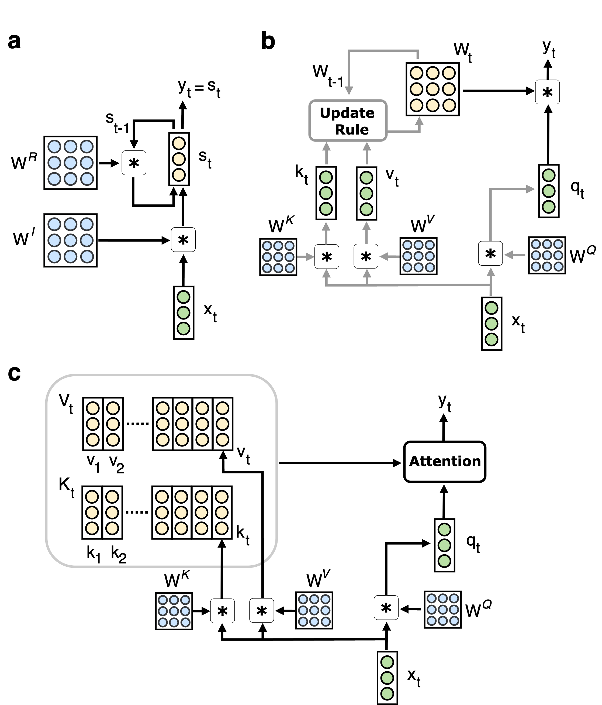
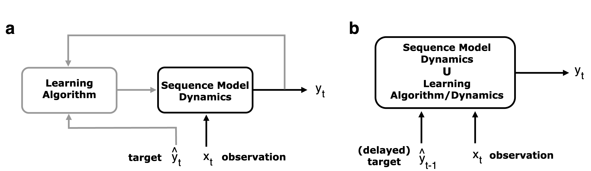

Fast weight programming and linear transformers: from machine learning to neurobiology
Abstract摘要
Recent advances in artificial neural networks for machine learning, and language modeling in particular, have established a family of recurrent neural network (RNN) architectures that, unlike conventional RNNs with vector-form hidden states, use two-dimensional (2D) matrix-form hidden states. Such 2D-state RNNs, known as Fast Weight Programmers (FWPs), can be interpreted as a neural network whose synaptic weights (called fast weights) dynamically change over time as a function of input observations, and serve as short-term memory storage; corresponding synaptic weight modifications are controlled or programmed by another network (the programmer) whose parameters are trained (e.g., by gradient descent). In this Primer, we review the technical foundations of FWPs, their computational characteristics, and their connections to transformers and state space models. We also discuss connections between FWPs and models of synaptic plasticity in the brain, suggesting a convergence of natural and artificial intelligence.
近年来，用于机器学习、尤其是语言建模的人工神经网络取得了进展，形成了一类循环神经网络（RNN）架构。与采用向量形式隐状态的传统 RNN 不同，这类架构采用二维（2D）矩阵形式的隐状态。这类具有二维状态的 RNN 被称为快速权重编程器（Fast Weight Programmers，FWPs），可被解释为一种神经网络，其突触权重（称为快速权重）随输入观测而在时间上动态变化，并用作短期记忆存储；相应的突触权重修改由另一个网络（编程器）控制或编程，而该网络的参数通过训练（例如，通过梯度下降）获得。在本篇入门综述中，我们回顾了 FWPs 的技术基础、计算特性，以及它们与 Transformer 和状态空间模型的联系。我们还讨论了 FWPs 与大脑突触可塑性模型之间的联系，这些联系表明自然智能与人工智能正在趋于融合。
Reviewed on OpenReview: https://openreview.net/forum?id=TDG8EkNmQR
在 OpenReview 上接受评审：https://openreview.net/forum?id=TDG8EkNmQR
1 Introduction1 引言
While early development of artificial neural networks (ANNs) was loosely inspired by neuroscience (McCulloch and Pitts, 1943; Rosenblatt, 1958; Fukushima, 1980), ANNs have rapidly evolved into an independent subfield of machine learning (ML) and artificial intelligence (AI) on their own (Rumelhart et al., 1986b; McClelland et al., 1986; Ivakhnenko, 1971; LeCun et al., 2015; Schmidhuber, 2015). While some argue for the continued influence of neuroscience on the development of ANNs (Zador et al., 2023; Hassabis et al., 2017; Macpherson et al., 2021), in reality, progress in ANNs has been largely driven by the core pursuits of computer scientists to develop ever more powerful, general, and efficient ML models, rather than through their original motivation to model brain computation under neurobiological constraints (Gershman, 2024). In a twist of fate, such a detachment of the ANN research from the traditional goals of neuroscience has led to more open-ended and flourishing developments in ANN models, which, in turn, have attracted interest from cognitive neuroscientists, as they represent the best existing computational systems for processing vision, audio, and language (Achiam et al., 2023; Pratap et al., 2024)—modalities that are central to human cognition in real-life scenarios. Such successes of ANNs have stimulated many cognitive neuroscientists to seriously examine ML-driven models as hypotheses to explain neural computation in the brain (Kriegeskorte, 2015; Yamins and DiCarlo, 2016; Schrimpf et al., 2021; Gershman et al., 2025).
尽管人工神经网络（ANNs）的早期发展在一定程度上受到了神经科学的启发 (McCulloch and Pitts, 1943; Rosenblatt, 1958; Fukushima, 1980)，但 ANNs 已迅速发展成为机器学习（ML）和人工智能（AI）中的一个独立子领域 (Rumelhart et al., 1986b; McClelland et al., 1986; Ivakhnenko, 1971; LeCun et al., 2015; Schmidhuber, 2015)。尽管有人主张神经科学持续影响着 ANNs 的发展 (Zador et al., 2023; Hassabis et al., 2017; Macpherson et al., 2021)，但实际上，ANNs 的进展主要源于计算机科学家开发更强大、更通用、更高效的 ML 模型这一核心追求，而非其最初在神经生物学约束下对大脑计算进行建模的动机 (Gershman, 2024)。出乎意料的是，ANN 研究与神经科学传统目标的这种脱离，使 ANN 模型的发展更加开放且蓬勃，进而吸引了认知神经科学家的关注，因为这些模型是现有处理视觉、音频和语言的最佳计算系统 (Achiam et al., 2023; Pratap et al., 2024)，而这些模态在人类现实生活场景中的认知活动中占据核心地位。ANNs 的这些成功促使许多认知神经科学家认真考察由 ML 驱动的模型，将其作为解释大脑神经计算的假说 (Kriegeskorte, 2015; Yamins and DiCarlo, 2016; Schrimpf et al., 2021; Gershman et al., 2025)。
However, given the rapid progress in ML, there is still a significant gap between the computational modeling toolkits in the two fields. In particular, boosted by the recent successes of ChatGPT (Achiam et al., 2023) and other language models, a myriad of sequence processing neural network architectures have been proposed to improve upon the standard transformer architecture (reviewed later) (Vaswani et al., 2017). While keeping track of every such models has become particularly challenging today, as the lack of formal naming conventions makes their (often obvious) mathematical relations opaque (e.g., how does “Mamba2” (Dao and Gu, 2024) relate to “Gated Linear Attention” (Yang et al., 2024a)?; answered in Sec. 3.4), it seems useful to summarize key elements of such advances in sequence and memory modeling in ML that are arguably relevant to neuroscience.
然而，鉴于 ML 的快速发展，这两个领域的计算建模工具体系之间仍存在显著差距。特别是，在近期 ChatGPT (Achiam et al., 2023) 和其他语言模型取得成功的推动下，人们提出了大量用于序列处理的神经网络架构，以改进标准 Transformer 架构（后文将予以回顾）(Vaswani et al., 2017)。如今，要跟踪每一种此类模型已变得尤为困难，因为缺乏正式的命名规范使它们之间（往往显而易见）的数学关系变得模糊不清（例如，“Mamba2” (Dao and Gu, 2024) 与“Gated Linear Attention” (Yang et al., 2024a) 之间有何关系？第 3.4 节将给出解答）；因此，概述 ML 中序列与记忆建模的这些进展中可能与神经科学相关的关键要素，似乎是有益的。
In this Primer, we present a special family of recurrent neural networks (RNNs; Elman (1989); Jordan (1986)) called Fast Weight Programmers (FWPs; Schmidhuber (1992a); Schlag et al. (2021a); Irie et al. (2021)), that has been well established in machine learning, but has yet to see broad dissemination and application within the neuroscience community. Unlike the conventional RNN with one-dimensional vector-form hidden states, states in FWPs are two-dimensional (2D) matrices (see Figure 1 for illustrations). As we will argue, such 2D-state RNNs are particularly relevant for neuroscience, as the matrix-form states can be interpreted as time-varying synaptic weights that maintain short-term memory—unlike conventional RNNs, in which all the synaptic weights are fixed after training.
在本篇入门综述中，我们介绍一类特殊的循环神经网络（RNNs；Elman (1989)；Jordan (1986)），称为快速权重编程器（FWPs；Schmidhuber (1992a)；Schlag et al. (2021a)；Irie et al. (2021)）。这类网络在机器学习领域已得到充分确立，但尚未在神经科学界得到广泛传播和应用。与采用一维向量形式隐状态的传统 RNN 不同，FWPs 中的状态是二维（2D）矩阵（示意见图 1）。正如下文将论述的，这类具有二维状态的 RNN 与神经科学尤其相关，因为其矩阵形式的状态可被解释为维持短期记忆的时变突触权重，而传统 RNN 中的所有突触权重在训练后均保持固定。
Additionally, FWPs naturally introduce a novel perspective on achieving biologically compatible local learning in ANNs, with an intuitive connection to the now-popular ML concept of in-context learning. Overall, FWPs may address certain longstanding limitations of ANNs as models of their biological counterpart, by providing a novel timescale for learning and memory.
此外，FWPs 自然地为在 ANNs 中实现与生物机制相容的局部学习引入了一种新视角，并与如今广受关注的 ML 概念——上下文学习——建立了直观联系。总体而言，通过为学习和记忆提供一种新的时间尺度，FWPs 或可解决 ANNs 作为其生物学对应系统的模型时长期存在的某些局限。
The FWP concept is an entry point for understanding a multitude of sequence models recently proposed in machine learning. In fact, many such models can be directly expressed as an instantiation of FWPs, with a specific choice of the update rule used to modify the fast synaptic weights (see Table 1 for a preview); and we also review a formal connection between FWP and the transformer architecture (Vaswani et al., 2017).
FWP 概念是理解机器学习领域近期提出的众多序列模型的切入点。事实上，许多此类模型都可以直接表示为 FWP 的一种实例，其区别在于用于修改快速突触权重的更新规则的具体选择（概览见表 1）；我们还回顾了 FWP 与 transformer 架构之间的形式化联系 (Vaswani et al., 2017)。
We hope this Primer will stimulate neuroscientists to rethink computational modeling of certain neurobiological features in ANNs, through unique properties of FWPs; and help them familialize with the state-of-the-art sequence and memory models from machine learning.
我们希望这篇入门综述能够通过 FWP 的独特性质，启发神经科学家重新思考如何在 ANN 中对某些神经生物学特征进行计算建模；并帮助他们熟悉机器学习领域最先进的序列与记忆模型。

Figure 1: An Illustration of sequence processing in a: conventional recurrent neural networks (RNNs), b: fast weight programmers (FWPs), and c: transformers. One time step of recurrent computation is shown. In all figures, colored circles indicate time-step specific variables (green) that are not retained for the next time step, temporally changing model state/short-term memory (yellow), and model parameters that are fixed/frozen after training (blue). In particular, the hidden state ${\bm{W}}_{t}$ of an FWP is a context-dependent time-varying matrix, whereas the hidden state of a conventional RNN ${\bm{s}}_{t}$ is a vector, and that of a transformer is the key-value memory matrices ${\bm{K}}_{t}$ and ${\bm{V}}_{t}$ whose size grows linearly with the sequence length. In b, black arrows indicate computation in the fast/main net of the FWP, while the remaining gray arrows correspond to the computation performed by the slow/programmer net. Activation functions and variables that are specific to certain variants of FWPs (such as a dynamic learning rate or state decay factor) are omitted for clarify; see Table 1 for a specific choice of the update rule used in various models.
图 1：序列处理示意图，a：传统循环神经网络（RNN），b：快速权重编程器（FWP），c：transformer。图中展示了循环计算的一个时间步。在所有图中，彩色圆圈分别表示特定于当前时间步且不会保留至下一时间步的变量（绿色）、随时间变化的模型状态／短期记忆（黄色），以及训练后固定／冻结的模型参数（蓝色）。具体而言，FWP 的隐藏状态 ${\bm{W}}_{t}$ 是一个依赖于上下文且随时间变化的矩阵，而传统 RNN 的隐藏状态 ${\bm{s}}_{t}$ 是一个向量，transformer 的隐藏状态则是键值记忆矩阵 ${\bm{K}}_{t}$ 和 ${\bm{V}}_{t}$，其大小随序列长度线性增长。在 b 中，黑色箭头表示 FWP 的快速／主网络中的计算，其余灰色箭头则对应于慢速／编程器网络执行的计算。为使图示清晰，省略了激活函数以及某些 FWP 变体特有的变量（如动态学习率或状态衰减因子）；各种模型所采用的更新规则的具体选择见表 1。
2 Preliminaries2 预备知识
Before delving into fast weight programmers (FWPs) in the next section, we briefly review some of the conventional, general-purpose sequence processing neural networks: the conventional RNN (Elman, 1989; Elman, 1990) (Sec. 2.1) and related state space models (Sec. 2.2), and the transformer neural network (Vaswani et al., 2017) (Sec. 2.3). This will be useful later for contrasting, relating and characterizing properties of FWPs compared to these conventional sequence models.
在下一节深入介绍快速权重编程器（FWP）之前，我们先简要回顾一些传统的通用序列处理神经网络：传统 RNN (Elman, 1989; Elman, 1990)（第 2.1 节）及相关的状态空间模型（第 2.2 节），以及 transformer 神经网络 (Vaswani et al., 2017)（第 2.3 节）。这将有助于后文对比 FWP 与这些传统序列模型、建立它们之间的联系，并刻画 FWP 相较于这些模型的性质。
Note that our main focus here is on sequence processing RNNs, rather than other “non-sequential RNNs” such as Amari-Little-Hopfield networks (Amari, 1972; Little, 1974; Hopfield, 1982). We also assume that readers are familiar with the general idea of machine learning that “trainable parameters” of a model can be trained by using some learning algorithm (e.g., backpropagation through time; BPTT (Rumelhart et al., 1986a; Werbos, 1990)) given some dataset or environment and an objective function to be optimized.
请注意，本文主要关注用于序列处理的 RNN，而非其他“非序列 RNN”，如 Amari-Little-Hopfield 网络 (Amari, 1972; Little, 1974; Hopfield, 1982)。我们还假定读者熟悉机器学习的基本思想，即在给定数据集或环境以及待优化的目标函数的情况下，可以使用某种学习算法（例如，随时间反向传播；BPTT (Rumelhart et al., 1986a; Werbos, 1990)）来训练模型的“可训练参数”。
Throughout our Primer, $t$, $\tau$, $T$, $H$, $d$, $d_{\text{key}}$, $d_{\text{in}}$ and $d_{\text{out}}$ denote positive integers; $\odot$ and $\otimes$ denote element-wise multiplication and outer product, respectively. Our vectors are column vectors, which implies that outer product also writes as ${\bm{a}}\otimes{\bm{b}}={\bm{a}}{\bm{b}}^{\top}\in\mathbb{R}^{n\times m}$ for arbitrary vectors ${\bm{a}}\in\mathbb{R}^{n}$ and ${\bm{b}}\in\mathbb{R}^{m}$ (this remark is useful to recognize outer products in certain equations).
在本篇入门综述中，$t$、$\tau$、$T$、$H$、$d$、$d_{\text{key}}$、$d_{\text{in}}$ 和 $d_{\text{out}}$ 均表示正整数；$\odot$ 和 $\otimes$ 分别表示逐元素乘法和外积。本文中的向量均为列向量，因此，对于任意向量 ${\bm{a}}\in\mathbb{R}^{n}$ 和 ${\bm{b}}\in\mathbb{R}^{m}$，外积也可写为 ${\bm{a}}\otimes{\bm{b}}={\bm{a}}{\bm{b}}^{\top}\in\mathbb{R}^{n\times m}$（这一说明有助于识别某些方程中的外积）。
2.1 Conventional recurrent neural networks2.1 传统循环神经网络
At every time step $t$, the conventional sequence processing RNN with a hidden state ${\bm{s}}_{t-1}\in\mathbb{R}^{d_{\text{out}}}$, receives an input ${\bm{x}}_{t}\in\mathbb{R}^{d_{\text{in}}}$ and produces an output ${\bm{s}}_{t}\in\mathbb{R}^{d_{\text{out}}}$ as follows:
在每个时间步 $t$，隐藏状态为 ${\bm{s}}_{t-1}\in\mathbb{R}^{d_{\text{out}}}$ 的传统序列处理 RNN 接收输入 ${\bm{x}}_{t}\in\mathbb{R}^{d_{\text{in}}}$，并按如下方式产生输出 ${\bm{s}}_{t}\in\mathbb{R}^{d_{\text{out}}}$：
where $\sigma$ is an activation function (e.g., $\tanh$), and ${\bm{W}}^{R}\in\mathbb{R}^{d_{\text{out}}\times d_{\text{out}}}$ and ${\bm{W}}^{I}\in\mathbb{R}^{d_{\text{out}}\times d_{\text{in}}}$ are recurrent and input weight matrices, respectively, which are the trainable parameters of the model. The initial state ${\bm{s}}_{0}$ is typically set to the “zero vector” whose entries are all zero. We omit the additive bias term inside $\sigma$ which is irrelevant for our discussion. See Figure 1a for an illustration.
其中，$\sigma$ 为激活函数（例如 $\tanh$），${\bm{W}}^{R}\in\mathbb{R}^{d_{\text{out}}\times d_{\text{out}}}$ 和 ${\bm{W}}^{I}\in\mathbb{R}^{d_{\text{out}}\times d_{\text{in}}}$ 分别为循环权重矩阵和输入权重矩阵，它们是模型的可训练参数。初始状态 ${\bm{s}}_{0}$ 通常设为各元素均为零的“零向量”。我们省略了 $\sigma$ 内部与本文讨论无关的加性偏置项。示意图见图 1a。
Note that, in machine learning, this RNN architecture is never used as-is in practice today, as it is known to critically suffer from the classic “vanishing gradient problem” (Hochreiter, 1991; Bengio et al., 1994; Hochreiter et al., 2001a) when trained using a gradient-descent based learning algorithm, and to yield sub-optimal performance in practice (note that another well-known problem, the “exploding gradient problem” can be rather easily remediated by heuristically clipping/truncating large gradients to a certain value (Graves, 2013; Mikolov, 2012)). Instead, more sophisticated “gated architectures” such as long short-term memory (LSTM (Hochreiter and Schmidhuber, 1997; Gers et al., 2000; Greff et al., 2016)) are typically used. The core temporal dynamics of LSTMs maintains two recurrent states ${\bm{c}}_{t}\in\mathbb{R}^{d_{\text{out}}}$ and ${\bm{s}}_{t}\in\mathbb{R}^{d_{\text{out}}}$:
需要注意的是，在机器学习领域，如今在实践中已不会直接使用这种 RNN 架构，因为众所周知，使用基于梯度下降的学习算法训练该架构时，它会受到经典的“梯度消失问题” (Hochreiter, 1991; Bengio et al., 1994; Hochreiter et al., 2001a) 的严重影响，并且在实践中表现欠佳（需要注意的是，另一个众所周知的问题——“梯度爆炸问题”——可以通过启发式地将较大的梯度裁剪或截断至某个值而较为容易地得到缓解 (Graves, 2013; Mikolov, 2012)）。因此，通常采用更复杂的“门控架构”，例如长短期记忆（LSTM (Hochreiter and Schmidhuber, 1997; Gers et al., 2000; Greff et al., 2016)）。LSTM 的核心时间动态维持两个循环状态 ${\bm{c}}_{t}\in\mathbb{R}^{d_{\text{out}}}$ 和 ${\bm{s}}_{t}\in\mathbb{R}^{d_{\text{out}}}$：
where the “gate functions” ${\bm{r}}_{t},{\bm{i}}_{t},{\bm{o}}_{t}\in\mathbb{R}^{d_{\text{out}}}$ and “cell input” ${\bm{z}}_{t}\in\mathbb{R}^{d_{\text{out}}}$ (${\bm{c}}_{t}$ is often referred to as “cell state”) are all parameterized functions of the recurrent state ${\bm{s}}_{t-1}$ and an input ${\bm{x}}_{t}$ as in Eq. 1.
其中，“门函数” ${\bm{r}}_{t},{\bm{i}}_{t},{\bm{o}}_{t}\in\mathbb{R}^{d_{\text{out}}}$ 和“单元输入” ${\bm{z}}_{t}\in\mathbb{R}^{d_{\text{out}}}$（${\bm{c}}_{t}$ 通常称为“单元状态”）均为以循环状态 ${\bm{s}}_{t-1}$ 和输入 ${\bm{x}}_{t}$ 为自变量的参数化函数，如式 1 所示。
Nevertheless, the vanilla RNN with the above Eq. 1 is sufficient as a contrastive example to later highlight the unique properties of FWPs. In this RNN model, during training, the “synaptic weights” ${\bm{W}}^{R}$ and ${\bm{W}}^{I}$ are modulated by the learning algorithm (typically by using gradients computed through backpropagation through time); however, once the training ends, these weights become frozen and immutable. At test time, the state vector ${\bm{s}}_{t}$ is the only time-varying variables which carry the model’s short-term memory to process sequence elements over time. Later, we will show how FWPs critically differ from the conventional RNN on this aspect.
尽管如此，采用上述式 1 的普通 RNN 已足以作为对照示例，用于在后文中突出 FWP 的独特性质。在该 RNN 模型中，训练期间，“突触权重” ${\bm{W}}^{R}$ 和 ${\bm{W}}^{I}$ 由学习算法调节（通常使用通过时间反向传播计算得到的梯度）；然而，一旦训练结束，这些权重便被冻结，不再改变。在测试时，状态向量 ${\bm{s}}_{t}$ 是唯一随时间变化的变量，它承载模型的短期记忆，以便随时间推移处理序列元素。后文将展示 FWP 在这一方面与传统 RNN 的关键差异。
2.2 State Space Models2.2 状态空间模型
Given the current ML research trend (Tiezzi et al., 2025) of developing efficient sequence models—defined as models for which training can be parallelized over the time dimension, whereas inference time-complexity is linear in sequence length (Yau et al., 2025), the so-called “state space models (SSMs)” or “linear RNNs” have become popular (Gu et al., 2022; Gu et al., 2021). An SSM can be directly obtained from the conventional RNN above by simply removing the (non-linear) activation function $\sigma$ in Eq. 1:
鉴于当前 ML 研究中开发高效序列模型的趋势 (Tiezzi et al., 2025)——此类模型被定义为训练可沿时间维度并行化、而推理时间复杂度与序列长度呈线性关系的模型 (Yau et al., 2025)，所谓的“状态空间模型（SSM）”或“线性 RNN”日益流行 (Gu et al., 2022; Gu et al., 2021)。只需移除式 1 中的（非线性）激活函数 $\sigma$，即可从上述传统 RNN 直接得到一个 SSM：
While deriving such a model from the original RNN is straightforward, this model is also known as a “linear time-invariant dynamical system” (which is originally defined through a continuous-time differential equation, whose discretization yields Eq. 4 exactly, which is typically followed by an extra equation ${\bm{y}}_{t}={\bm{W}}^{O}{\bm{s}}_{t}$ to produce the output vector ${\bm{y}}_{t}\in\mathbb{R}^{d_{\text{out}}}$ using an extra weight matrix ${\bm{W}}^{O}\in\mathbb{R}^{d_{\text{out}}\times d_{\text{out}}}$). We do not further delve into such an alternative view here, as it provides no additional insight into the resulting computational model for our purpose.
虽然从原始 RNN 推导出此类模型十分直接，但该模型也称为“线性时不变动力系统”（它最初通过连续时间微分方程定义，该方程离散化后恰好得到式 4，通常还会在其后附加一个方程 ${\bm{y}}_{t}={\bm{W}}^{O}{\bm{s}}_{t}$，利用额外的权重矩阵 ${\bm{W}}^{O}\in\mathbb{R}^{d_{\text{out}}\times d_{\text{out}}}$ 生成输出向量 ${\bm{y}}_{t}\in\mathbb{R}^{d_{\text{out}}}$）。这里不再深入讨论这一替代视角，因为就本文的目的而言，它并不能为理解所得的计算模型提供额外的启示。
The definition of an SSM can be generalized to include models with time-varying weight matrices ${\bm{W}}_{t}^{R}\in\mathbb{R}^{d_{\text{out}}\times d_{\text{out}}}$ and ${\bm{W}}_{t}^{I}\in\mathbb{R}^{d_{\text{out}}\times d_{\text{in}}}$ indexed by $t$:
SSM 的定义可以推广，以涵盖具有按 $t$ 索引的时变权重矩阵 ${\bm{W}}_{t}^{R}\in\mathbb{R}^{d_{\text{out}}\times d_{\text{out}}}$ 和 ${\bm{W}}_{t}^{I}\in\mathbb{R}^{d_{\text{out}}\times d_{\text{in}}}$ 的模型：
By recognizing that such a definition can also express models in which ${\bm{s}}_{t}$ is a matrix instead of a vector, we will see a connection to fast weight programmers (Sec. 3).
认识到这一定义也可以表示 ${\bm{s}}_{t}$ 为矩阵而非向量的模型后，我们便能看到它与快速权重程序器之间的联系（第 3 节）。
An interesting class of SSMs can be obtained by setting the weight matrices ${\bm{W}}_{t}^{R}$ and ${\bm{W}}_{t}^{I}$ in Eq. 5 to be diagonal matrices with diagonals ${\bm{r}}_{t}\in\mathbb{R}^{d_{\text{out}}}$ and ${\bm{i}}_{t}\in\mathbb{R}^{d_{\text{out}}}$ (by setting $d_{\text{out}}=d_{\text{in}}$), respectively; we obtain the following element-wise recurrence:
将式 5 中的权重矩阵 ${\bm{W}}_{t}^{R}$ 和 ${\bm{W}}_{t}^{I}$ 分别设为对角线元素为 ${\bm{r}}_{t}\in\mathbb{R}^{d_{\text{out}}}$ 和 ${\bm{i}}_{t}\in\mathbb{R}^{d_{\text{out}}}$ 的对角矩阵（令 $d_{\text{out}}=d_{\text{in}}$），即可得到一类值得关注的 SSM；由此得到如下逐元素递推式：
It should be noted that this equation is identical to the cell update in an LSTM (Eq. 2), except that, in this SSM, ${\bm{r}}_{t}$ and ${\bm{i}}_{t}$ are functions of ${\bm{x}}_{t}$ or a few earlier observations (e.g., the last four; ${\bm{x}}_{t}$, ${\bm{x}}_{t-1}$, ${\bm{x}}_{t-2}$, ${\bm{x}}_{t-3}$) only, i.e., the “gate functions” are not recurrent (no dependency on ${\bm{s}}_{t-1}$), and the cell input ${\bm{z}}_{t}$ in Eq. 2 is reduced to ${\bm{x}}_{t}$.
需要指出的是，该方程与 LSTM 中的单元更新（式 2）相同，区别仅在于，在该 SSM 中，${\bm{r}}_{t}$ 和 ${\bm{i}}_{t}$ 仅为 ${\bm{x}}_{t}$ 或少数几个较早的观测值（例如，最近的四个观测值：${\bm{x}}_{t}$、${\bm{x}}_{t-1}$、${\bm{x}}_{t-2}$、${\bm{x}}_{t-3}$）的函数，即“门函数”不具有循环性（不依赖于 ${\bm{s}}_{t-1}$），且式 2 中的单元输入 ${\bm{z}}_{t}$ 简化为 ${\bm{x}}_{t}$。
An efficient SSM can be obtained by deliberately using this linear element-wise recurrence of Eq. 6 as the core temporal processing operation of the model (no other form of recurrence is used). This choice has two crucial consequences: first, it enables training parallelism (i.e., there exists an efficient algorithm to compute ${\bm{s}}_{t}$ for all $t$ in parallel (Martin and Cundy, 2018; Blelloch, 1990); which is not the case for the conventional, fully recurrent network); second, it sacrifices model expressivity, i.e., abilities to perform certain computations (Merrill et al., 2020; Grazzi et al., 2025; Merrill et al., 2024) (we discuss this further in Sec. 3.6)—as a side note, there is also a third consequence, which is that element-wise recurrence enables efficient online learning through a tractable real-time recurrent learning algorithm (Mozer, 1989; Gori et al., 1989; Zucchet et al., 2023; Irie et al., 2024), but further discussion is out of scope here.
有意将式 6 中的这种线性逐元素递推用作模型的核心时序处理操作（不使用任何其他形式的递推），即可得到高效的 SSM。这一选择带来了两个关键结果：首先，它使并行训练成为可能（即存在一种高效算法，可并行计算所有 $t$ 对应的 ${\bm{s}}_{t}$ (Martin and Cundy, 2018; Blelloch, 1990)；而传统的全循环网络则无法做到这一点）；其次，它牺牲了模型的表达能力，即执行某些计算的能力 (Merrill et al., 2020; Grazzi et al., 2025; Merrill et al., 2024)（我们将在第 3.6 节进一步讨论这一点）——此外，还有第三个结果，即逐元素递推使得通过计算上可行的实时循环学习算法实现高效在线学习成为可能 (Mozer, 1989; Gori et al., 1989; Zucchet et al., 2023; Irie et al., 2024)，但进一步讨论超出了本文的范围。
This “cell-only LSTM” is currently often called “Mamba”, after the name of an efficient “hardware-aware implementation” (Gu and Dao, 2024), i.e., an implementation that takes into account the low-level memory hierarchy of modern graphic processing units (GPUs). However, we note that many have previously proposed similar models based on Eq. 6 under various names—including Quasi RNNs (Bradbury et al., 2017) and the Simple Recurrent Unit (Lei et al., 2018), among others (Balduzzi and Ghifary, 2016; Li et al., 2018; Gonnet and Deselaers, 2020)—to achieve improved efficiency over LSTM.
这种“仅含单元的 LSTM”目前通常被称为“Mamba”，该名称源自一种高效的“硬件感知实现” (Gu and Dao, 2024)，即一种考虑了现代图形处理器（GPUs）底层存储层次结构的实现。然而，我们注意到，此前已有许多研究以不同名称提出了基于式 6 的类似模型，包括 Quasi RNNs (Bradbury et al., 2017)、Simple Recurrent Unit (Lei et al., 2018) 以及其他模型 (Balduzzi and Ghifary, 2016; Li et al., 2018; Gonnet and Deselaers, 2020)，旨在实现比 LSTM 更高的效率。
2.3 Transformer neural networks2.3 Transformer 神经网络
Here we review the Transformer neural network (Vaswani et al., 2017) which is today’s de facto standard sequence processing model architecture in ML. It also has a direct mathematical connection to FWPs (Schmidhuber, 1992a; Schlag et al., 2021a), as we will review in the next section.
本节回顾 Transformer 神经网络 (Vaswani et al., 2017)，它是当今 ML 中事实上的标准序列处理模型架构。它与 FWPs 之间还存在直接的数学联系 (Schmidhuber, 1992a; Schlag et al., 2021a)，我们将在下一节回顾这一联系。
Transformer models come in three distinct variations: encoder-decoder (Vaswani et al., 2017), encoder-only (Devlin et al., 2019), or decoder-only (Liu et al., 2018) architectures. We focus on the decoder-only (also known as the “causal model” architecture), which is a general-purpose sequence model used for example in language models (Al-Rfou et al., 2019; Dai et al., 2019; Baevski and Auli, 2019; Irie et al., 2019) including OpenAI’s GPT series (Radford et al., 2019; Brown and others, 2020); for brevity, we refer to this as “the” transformer architecture here.
Transformer 模型有三种不同的架构变体：编码器—解码器架构 (Vaswani et al., 2017)、仅编码器架构 (Devlin et al., 2019) 和仅解码器架构 (Liu et al., 2018)。我们重点讨论仅解码器架构（也称为“因果模型”架构），这是一种通用序列模型，例如用于语言模型 (Al-Rfou et al., 2019; Dai et al., 2019; Baevski and Auli, 2019; Irie et al., 2019)，其中包括 OpenAI 的 GPT 系列 (Radford et al., 2019; Brown and others, 2020)；为行文简洁，本文将其简称为“Transformer 架构”。
A typical transformer architecture consists of multiple layers, interleaving a “self-attention” layer (Parikh et al., 2016; Cheng et al., 2016; Lin et al., 2017; Bahdanau et al., 2015) and a two-layer feedforward block, each combined with a residual connection (He et al., 2016a; He et al., 2016b; Srivastava et al., 2015) and a layer normalization operation (Ba et al., 2016b). Among these layers, the core temporal/memory processing operation in the transformer is carried out by the self-attention layer; therefore, we focus on describing its sequential dynamics here.
典型的 Transformer 架构由多个层组成，其中“自注意力”层 (Parikh et al., 2016; Cheng et al., 2016; Lin et al., 2017; Bahdanau et al., 2015) 与双层前馈模块交替排列，二者均结合了残差连接 (He et al., 2016a; He et al., 2016b; Srivastava et al., 2015) 和层归一化操作 (Ba et al., 2016b)。在这些层中，Transformer 的核心时序／记忆处理操作由自注意力层完成；因此，本文重点描述其序列动态。
Like the conventional RNN in Sec. 2.1, at every time step $t$, a causal self-attention layer receives an input ${\bm{x}}_{t}\in\mathbb{R}^{d_{\text{in}}}$ and produces an output ${\bm{y}}_{t}\in\mathbb{R}^{d_{\text{out}}}$, while maintaining the so-called “key-value memory”, represented by two matrices ${\bm{K}}_{t}\in\mathbb{R}^{d_{\text{key}}\times t}$ and ${\bm{V}}_{t}\in\mathbb{R}^{d_{\text{out}}\times t}$ as follows:
与第 2.1 节中的传统 RNN 一样，在每个时间步 $t$，因果自注意力层接收输入 ${\bm{x}}_{t}\in\mathbb{R}^{d_{\text{in}}}$ 并产生输出 ${\bm{y}}_{t}\in\mathbb{R}^{d_{\text{out}}}$，同时维护所谓的“键值记忆”，该记忆由两个矩阵 ${\bm{K}}_{t}\in\mathbb{R}^{d_{\text{key}}\times t}$ 和 ${\bm{V}}_{t}\in\mathbb{R}^{d_{\text{out}}\times t}$ 表示，具体如下：
where ${\bm{q}}_{t},{\bm{k}}_{t}\in\mathbb{R}^{d_{\text{key}}}$, ${\bm{v}}_{t}\in\mathbb{R}^{d_{\text{out}}}$ in Eq. 7 are different projections of the input—called query, key, and value, respectively— through matrices ${\bm{W}}^{\text{Q}}\in\mathbb{R}^{d_{\text{key}}\times d_{\text{in}}}$, ${\bm{W}}^{\text{K}}\in\mathbb{R}^{d_{\text{key}}\times d_{\text{in}}}$, and ${\bm{W}}^{\text{V}}\in\mathbb{R}^{d_{\text{out}}\times d_{\text{in}}}$ which are the trainable parameters of the model. The operation $[]$ as in $[{\bm{K}}_{t-1},{\bm{k}}_{t}]$ denotes concatenation of vector ${\bm{k}}_{t}\in\mathbb{R}^{d_{\text{key}}}$ to matrix ${\bm{K}}_{t-1}\in\mathbb{R}^{d_{\text{key}}\times(t-1)}$ along the time dimension, yielding ${\bm{K}}_{t}\in\mathbb{R}^{d_{\text{key}}\times t}$. ${\bm{K}}_{0}$ and ${\bm{V}}_{0}$ are initially empty. We omit the $1/\sqrt{d_{\text{key}}}$ scaling inside $\mathrm{softmax}$, as well as the output projection, which are typically used but are irrelevant to our discussion here. In Eq. 10, $\bm{\alpha}_{t,\tau}\in\mathbb{R}$ denotes the $\tau$-th element of the vector $\mathrm{softmax}({\bm{K}}_{t}^{\top}{\bm{q}}_{t})\in\mathbb{R}^{t}$. See Figure 1c for illustration.
其中，式 7 中的 ${\bm{q}}_{t},{\bm{k}}_{t}\in\mathbb{R}^{d_{\text{key}}}$、${\bm{v}}_{t}\in\mathbb{R}^{d_{\text{out}}}$ 是输入通过矩阵 ${\bm{W}}^{\text{Q}}\in\mathbb{R}^{d_{\text{key}}\times d_{\text{in}}}$、${\bm{W}}^{\text{K}}\in\mathbb{R}^{d_{\text{key}}\times d_{\text{in}}}$ 和 ${\bm{W}}^{\text{V}}\in\mathbb{R}^{d_{\text{out}}\times d_{\text{in}}}$ 得到的不同投影，分别称为查询、键和值，这些矩阵是模型的可训练参数。$[{\bm{K}}_{t-1},{\bm{k}}_{t}]$ 中的 $[]$ 操作表示沿时间维度将向量 ${\bm{k}}_{t}\in\mathbb{R}^{d_{\text{key}}}$ 拼接到矩阵 ${\bm{K}}_{t-1}\in\mathbb{R}^{d_{\text{key}}\times(t-1)}$ 上，从而得到 ${\bm{K}}_{t}\in\mathbb{R}^{d_{\text{key}}\times t}$。${\bm{K}}_{0}$ 和 ${\bm{V}}_{0}$ 初始时均为空。我们省略了 $\mathrm{softmax}$ 内部的 $1/\sqrt{d_{\text{key}}}$ 缩放以及输出投影，这些操作通常会被使用，但与本文的讨论无关。在式 10 中，$\bm{\alpha}_{t,\tau}\in\mathbb{R}$ 表示向量 $\mathrm{softmax}({\bm{K}}_{t}^{\top}{\bm{q}}_{t})\in\mathbb{R}^{t}$ 的第 $\tau$ 个元素。示意图见图 1c。
The computation in Eq. 9 is called “attention”, which is rather an intuitive name when we read Eq. 9 as (1) comparing the query vector from the current step $t$ to the keys from all the time steps through dot product to produce a score for each of $t$ keys (${\bm{K}}_{t}^{\top}{\bm{q}}_{t}\in\mathbb{R}^{t}$), (2) sharpening and normalizing these similarity scores through the softmax function to obtain “attention scores” ($\bm{\alpha}_{t,\tau}\geq 0$ for all $\tau$ from $1$ to $t$ with $\sum_{\tau=1}^{t}\bm{\alpha}_{t,\tau}=1$), and (3) using the resulting scores as coefficients to compute the weighted average of all the value vectors (as is explicitly shown in Eq. 10) to produce the output; this effectively implements a form of attention as the model focuses on certain key-value memory elements at each step $t$.
式 9 中的计算称为“注意力”；如果将式 9 理解为以下过程，这一名称就相当直观：(1) 通过点积将当前时间步 $t$ 的查询向量与所有时间步的键进行比较，为 $t$ 个键中的每一个生成一个分数（${\bm{K}}_{t}^{\top}{\bm{q}}_{t}\in\mathbb{R}^{t}$）；(2) 通过 softmax 函数使这些相似度分数更加尖锐并进行归一化，从而得到“注意力分数”（对于从 $1$ 到 $t$ 的所有 $\tau$，均有 $\bm{\alpha}_{t,\tau}\geq 0$，且 $\sum_{\tau=1}^{t}\bm{\alpha}_{t,\tau}=1$）；(3) 将所得分数作为系数，计算所有值向量的加权平均（如式 10 所明确展示的），从而生成输出；由于模型在每个时间步 $t$ 都聚焦于特定的键值记忆元素，这实际上实现了一种注意力机制。
Additionally, practical transformers typically make use of “multi-head self-attention”, where multiple independent heads within the same layer perform self-attention in parallel. By introducing an extra hyper-parameter $H$ as the number of heads, after projection of Eq. 7, each query/key/value vector is split into $H$ sub-vectors of the same size ($d_{\text{key}}$ and $d_{\text{out}}$ are set to be a multiple of $H$); the self-attention operation above is computed independently for the $H$ sets of query/key/value vectors. The results from each head (each of size $d_{\text{out}}/H$) are concatenated to produce the output ${\bm{y}}_{t}\in\mathbb{R}^{d_{\text{out}}}$.
此外，实际应用中的 Transformer 通常使用“多头自注意力”，其中同一层内的多个独立头并行执行自注意力计算。引入额外的超参数 $H$ 表示头的数量，在完成式 7 的投影后，将每个查询／键／值向量拆分为 $H$ 个大小相同的子向量（将 $d_{\text{key}}$ 和 $d_{\text{out}}$ 设为 $H$ 的倍数）；随后，对这 $H$ 组查询／键／值向量分别独立执行上述自注意力运算。将各个头的结果（每个结果的大小均为 $d_{\text{out}}/H$）拼接起来，得到输出 ${\bm{y}}_{t}\in\mathbb{R}^{d_{\text{out}}}$。
One important distinction between the transformer and RNNs (Sec. 2.1) is their computational complexities. As we can see in Eq. 8, the size of key and value memory matrices linearly grows with the time step (i.e., sequence length)—unlike in the conventional RNN whose state has a constant size. This results in quadratic time complexity w.r.t. sequence length in the attention computation of Eq. 9—whereas complexity is linear in RNNs (i.e., compute is constant per time step). Consequently, practical self-attention requires predetermining a maximum sequence length, also called context window size, and any old events that fall outside the window are discarded. On the other hand, training of a transformer can be highly efficient. All the computations above are parallelizable over the sequence element by introducing the so-called “attention mask” inside the softmax as follows. By denoting an input sequence with $T$ elements as ${\bm{X}}=[{\bm{x}}_{1},...,{\bm{x}}_{T}]\in\mathbb{R}^{d_{\text{in}}\times T}$ (${\bm{X}}_{t}={\bm{x}}_{t}$ for all t) and the outputs as ${\bm{Y}}=[{\bm{y}}_{1},...,{\bm{y}}_{T}]\in\mathbb{R}^{d_{\text{out}}\times T}$ (and by analogously denoting queries, keys, and values for $T$ steps as ${\bm{Q}},{\bm{K}}\in\mathbb{R}^{d_{\text{key}}\times T}$, and ${\bm{V}}\in\mathbb{R}^{d_{\text{out}}\times T}$, respectively), parallel computation performs:
Transformer 与 RNN（第 2.1 节）之间的一个重要区别在于计算复杂度。由式 8 可见，键和值记忆矩阵的大小随时间步（即序列长度）线性增长，而传统 RNN 的状态大小保持恒定。这使得式 9 中注意力计算的时间复杂度相对于序列长度呈二次增长，而 RNN 的复杂度为线性（即每个时间步的计算量恒定）。因此，实际应用中的自注意力需要预先确定最大序列长度，也称为上下文窗口大小，所有落在窗口之外的旧事件都会被丢弃。另一方面，Transformer 的训练可以非常高效。通过如下方式在 softmax 内引入所谓的“注意力掩码”，上述所有计算都可以在序列元素之间并行执行。将包含 $T$ 个元素的输入序列记为 ${\bm{X}}=[{\bm{x}}_{1},...,{\bm{x}}_{T}]\in\mathbb{R}^{d_{\text{in}}\times T}$（对于所有 t，均有 ${\bm{X}}_{t}={\bm{x}}_{t}$），将输出记为 ${\bm{Y}}=[{\bm{y}}_{1},...,{\bm{y}}_{T}]\in\mathbb{R}^{d_{\text{out}}\times T}$（并类似地将 $T$ 个时间步的查询、键和值分别记为 ${\bm{Q}},{\bm{K}}\in\mathbb{R}^{d_{\text{key}}\times T}$ 和 ${\bm{V}}\in\mathbb{R}^{d_{\text{out}}\times T}$），则并行计算如下：
where ${\bm{M}}\in\mathbb{R}^{T\times T}$ is the so-called attention mask. These equations are equivalent to the sequential Eqs. 7-9 by setting ${\bm{M}}$ to be the upper triangular matrix, i.e., ${\bm{M}}_{i,j}=1$ if $i\leq j$ and ${\bm{M}}_{i,j}=-\infty$ otherwise; which explicitly sets certain attention weights to zero, as the causal model cannot access data from the future.
其中，${\bm{M}}\in\mathbb{R}^{T\times T}$ 为所谓的注意力掩码。将 ${\bm{M}}$ 设为上三角矩阵，即当 $i\leq j$ 时 ${\bm{M}}_{i,j}=1$，否则 ${\bm{M}}_{i,j}=-\infty$，这些方程就与按时间顺序计算的式 7-9 等价；由于因果模型无法访问未来的数据，这会显式地将某些注意力权重设为零。
Practical implementations of transformers have been highly optimized. In particular, an efficient hardware-aware implementation is available (Dao, 2023), leveraging the “online softmax algorithm” (Rabe and Staats, 2021; Milakov and Gimelshein, 2018), which significantly reduces memory requirement (crucial for GPU efficiency) compared to the naive algorithm that explicitly stores ${\bm{K}}^{\top}{\bm{Q}}\in\mathbb{R}^{T\times T}$ in Eq. 12; we refer to Dao (2023) for further details.
Transformer 的实际实现已得到高度优化。特别是，已有一种高效的硬件感知实现 (Dao, 2023)，它利用“在线 softmax 算法” (Rabe and Staats, 2021; Milakov and Gimelshein, 2018)，与显式存储式 12 中 ${\bm{K}}^{\top}{\bm{Q}}\in\mathbb{R}^{T\times T}$ 的朴素算法相比，显著降低了内存需求（这对 GPU 效率至关重要）；更多细节请参阅 Dao (2023)。
3 Fast Weight Programmer Neural Networks3 快速权重编程器神经网络
Here we present the concept of fast weight programming, and the resulting sequence models as well as their key properties.
这里介绍快速权重编程的概念、由此得到的序列模型及其关键性质。
3.1 Basic Instantiation: FWP with a purely additive update rule3.1 基本实例：采用纯加性更新规则的 FWP
Before introducing the general definition of fast weight programmers in the next Sec. 3.2. Here we first provide the most basic instantiation of FWPs: an “FWP with a purely additive outer product update rule” (Schmidhuber, 1992a) as an illustrative example; we refer to it as “vanilla FWP”.
在下一节，即第 3.2 节介绍快速权重编程器的一般定义之前。这里先给出 FWP 最基本的实例：“采用纯加性外积更新规则的 FWP” (Schmidhuber, 1992a)，作为说明性示例；我们将其称为“基础 FWP”。
Like the conventional RNN and transformer, a vanilla FWP is a general-purpose sequence model. At every time step $t$, the model receives an input ${\bm{x}}_{t}\in\mathbb{R}^{d_{\text{in}}}$ and produces an output ${\bm{y}}_{t}\in\mathbb{R}^{d_{\text{out}}}$, while maintaining the so-called “fast weight” matrix ${\bm{W}}_{t}\in\mathbb{R}^{d_{\text{out}}\times d_{\text{key}}}$ as a short-term memory storage, as follows:
与传统 RNN 和 Transformer 一样，基础 FWP 是一种通用序列模型。在每个时间步 $t$，模型接收输入 ${\bm{x}}_{t}\in\mathbb{R}^{d_{\text{in}}}$ 并生成输出 ${\bm{y}}_{t}\in\mathbb{R}^{d_{\text{out}}}$，同时维护所谓的“快速权重”矩阵 ${\bm{W}}_{t}\in\mathbb{R}^{d_{\text{out}}\times d_{\text{key}}}$，作为短期记忆存储，具体如下：
where Eq. 7 is the same as in the transformer (Sec. 2.3) with trainable parameters ${\bm{W}}^{\text{Q}}\in\mathbb{R}^{d_{\text{key}}\times d_{\text{in}}}$, ${\bm{W}}^{\text{K}}\in\mathbb{R}^{d_{\text{key}}\times d_{\text{in}}}$, and ${\bm{W}}^{\text{V}}\in\mathbb{R}^{d_{\text{out}}\times d_{\text{in}}}$; and as we’ll discuss in Sec. 3.3, the connection between this model and the transformer does not end here. $\phi$ is an activation function we discuss later (while the activation on ${\bm{v}}$ is optional, in practice it is often also applied to ${\bm{v}}$). The “fast weight matrix“ ${\bm{W}}_{t}\in\mathbb{R}^{d_{\text{out}}\times d_{\text{key}}}$ in Eq. 13 is initially set to 0, i.e., ${\bm{W}}_{0}=0$. See Figure 1b for illustration.
其中，式 7 与 transformer（第 2.3 节）中的相同，具有可训练参数 ${\bm{W}}^{\text{Q}}\in\mathbb{R}^{d_{\text{key}}\times d_{\text{in}}}$、${\bm{W}}^{\text{K}}\in\mathbb{R}^{d_{\text{key}}\times d_{\text{in}}}$ 和 ${\bm{W}}^{\text{V}}\in\mathbb{R}^{d_{\text{out}}\times d_{\text{in}}}$；正如我们将在第 3.3 节中讨论的，该模型与 transformer 之间的联系并不止于此。$\phi$ 是我们稍后将讨论的一种激活函数（尽管对 ${\bm{v}}$ 应用激活函数是可选的，但在实践中通常也会对 ${\bm{v}}$ 应用该函数）。式 13 中的“快速权重矩阵”${\bm{W}}_{t}\in\mathbb{R}^{d_{\text{out}}\times d_{\text{key}}}$ 初始设为 0，即 ${\bm{W}}_{0}=0$。示意图见图 1b。
This model can be viewed as a system of two networks (Schmidhuber, 1992a) where one net—the slow net, corresponding to Eq. 7 (note that the three equations in Eq. 7 can be grouped into a single matrix multiplication by defining a “slow weight” matrix ${\bm{W}}^{\text{slow}}=[{\bm{W}}^{\text{Q}},{\bm{W}}^{\text{K}},{\bm{W}}^{\text{V}}]\in\mathbb{R}^{(2*d_{\text{key}}+d_{\text{out}})\times d_{\text{key}}}$ by row concatenation)—learns to program or train another net, the fast net (Eq. 14) by generating its weight changes (Eq. 13). The fast weight change is defined through an update rule; here Eq. 13 takes the functional form of a Hebbian-like learning rule (Konorski, 1948; Hebb, 1949) whose update term is a simple outer product term. The connection to SSMs (Sec. 2.2) is also noticeable: Eq. 13 is essentially a linear RNN with 2-dimensional state ${\bm{W}}_{t}$ (which could potentially be flattened and operationalized to be a one-dimensional vector state).
该模型可视为一个由两个网络组成的系统 (Schmidhuber, 1992a)，其中一个网络——对应于式 7 的慢速网络（注意，通过按行拼接来定义一个“慢速权重”矩阵 ${\bm{W}}^{\text{slow}}=[{\bm{W}}^{\text{Q}},{\bm{W}}^{\text{K}},{\bm{W}}^{\text{V}}]\in\mathbb{R}^{(2*d_{\text{key}}+d_{\text{out}})\times d_{\text{key}}}$，可将式 7 中的三个方程合并为一次矩阵乘法）——通过生成另一个网络的权重变化（式 13），学习对该网络，即快速网络（式 14），进行编程或训练。快速权重的变化通过一条更新规则来定义；这里，式 13 采用类 Hebb 学习规则 (Konorski, 1948; Hebb, 1949) 的函数形式，其更新项是一个简单的外积项。它与 SSM（第 2.2 节）的联系也很明显：式 13 本质上是一个具有二维状态 ${\bm{W}}_{t}$ 的线性 RNN（该状态有可能被展平，并作为一维向量状态进行运算）。
From a neuroscientific viewpoint, we may interpret this mechanism as rapid synaptic modulation (Panichello et al., 2024; Spaak and Wolff, 2025)—a property which is absent in the conventional RNNs (Sec. 2.1). Under this view, it might be natural not to consider the fast and slow net as representing the same type of “neural network” but rather, it may be more appropriate to consider the slow net as representing some “molecular network”—which is reminiscent of Denis Bray’s view on ANNs (Bray, 1995; Bray, 2003; Bray, 2009), implementing molecular mechanisms that support learning and memory in the (fast) neural network. We provide further neurobiological discussion in Sec. 4.
从神经科学的角度来看，我们可以将这一机制解释为快速突触调制 (Panichello et al., 2024; Spaak and Wolff, 2025)——这是传统 RNN（第 2.1 节）所不具备的一种特性。在这一观点下，不将快速网络和慢速网络视为代表同一类型的“神经网络”或许是自然的；更恰当的做法可能是将慢速网络视为代表某种“分子网络”——这让人联想到 Denis Bray 对 ANN 的看法 (Bray, 1995; Bray, 2003; Bray, 2009)——其实现了支持（快速）神经网络中学习与记忆的分子机制。我们将在第 4 节进一步展开神经生物学方面的讨论。
From the memory system perspective, Eqs. 13-14 also correspond to an associative memory storing key/value pairs—also called correlation matrix memory (Kohonen, 1972) (see also Steinbuch and Piske (1963); Willshaw et al. (1969)), whose writing operation is an outer product of the key and value vectors (Eq. 13); and its reading/retrieval operation is a matrix-vector multiplication between the memory matrix and a query vector (Eq. 14). From a cognitive science view point, this model can also be seen as a learnable 2D version of the “tensor product representations” (outer product is the 2D tensor product) (Smolensky, 1990; Schlag and Schmidhuber, 2018; Schlag et al., 2019; Schlag et al., 2021b)—an ANN model to bind two pieces of information (Greff et al., 2020).
从记忆系统的角度来看，式 13-14 也对应于一种存储键/值对的联想记忆——也称为相关矩阵记忆 (Kohonen, 1972)（另见 Steinbuch and Piske (1963); Willshaw et al. (1969)），其写入操作是键向量与值向量的外积（式 13）；其读取/检索操作则是记忆矩阵与查询向量之间的矩阵-向量乘法（式 14）。从认知科学的角度来看，该模型也可视为“张量积表示”的一种可学习的二维版本（外积即二维张量积）(Smolensky, 1990; Schlag and Schmidhuber, 2018; Schlag et al., 2019; Schlag et al., 2021b)——这是一种用于绑定两条信息的 ANN 模型 (Greff et al., 2020)。
3.2 Core Concept3.2 核心概念
As is examplified by the model in Sec. 3.1, a fast weight programmer (FWP) (Schmidhuber, 1992a; Irie et al., 2021) is defined as a neural network system in which one (sub)network, called slow net, generates modifications to weights of another (sub)network, called fast net, as a function of a sequence of input observations. By conceptualizing weights of a neural network as its program/software (Schmidhuber, 1990a), such a slow net which modifies the weights of a fast net is a programmer. The weights of the fast net are fast, because they can rapidly change as a response to observations received at every time step, while those of the slow net are slow because they are typically trained by some learning algorithm that updates slow weights on the sequence level (and they typically become fixed after training).
如第 3.1 节中的模型所示，快速权重编程器（FWP）(Schmidhuber, 1992a; Irie et al., 2021) 被定义为一种神经网络系统，其中一个称为慢速网络的（子）网络根据输入观测序列，生成对另一个称为快速网络的（子）网络的权重的修改。将神经网络的权重视为其程序/软件 (Schmidhuber, 1990a)，则这种修改快速网络权重的慢速网络就是一个编程器。快速网络的权重之所以是快速的，是因为它们能够响应每个时间步接收到的观测而迅速变化；而慢速网络的权重之所以是慢速的，是因为它们通常由某种在序列层面更新慢速权重的学习算法进行训练（且通常在训练后固定下来）。
In most of the existing and practical FWP models, both fast and slow nets are one-layer networks, and the weight update rule is some outer-product based one. However, the general concept of fast weight programming is more general and has no such a restriction (Irie et al., 2021); in principle, more complex (e.g., deeper) slow/fast nets or other update rules could be used. In fact, the core concept of FWPs is the idea of training a network to train (e.g., generate weights of) another network—an idea which has been rebranded as “hypernetworks” (Ha et al., 2017) in the modern deep learning literature. One common challenge though is to deal with the high-dimensionality of ANN weights, which are typically too large to be directly parameterized as outputs of an ANN (except for tiny networks (Gomez and Schmidhuber, 2005)). The use of outer product elegantly overcomes this challenge by generating two small vectors instead of one large matrix, and it’s arguably more practical compared to other alternative methods that rely on weight compression (Irie and Schmidhuber, 2021) or sparsity (Munkhdalai, 2020).
在现有且实用的 FWP 模型中，快速网络和慢速网络大多都是单层网络，权重更新规则则是某种基于外积的规则。然而，快速权重编程这一总体概念更为宽泛，并无此类限制 (Irie et al., 2021)；原则上，可以使用更复杂（例如更深）的慢速网络或快速网络，或采用其他更新规则。事实上，FWP 的核心概念是训练一个网络，使其能够训练另一个网络（例如，为其生成权重）——这一思想在现代深度学习文献中被重新命名为“超网络” (Ha et al., 2017)。不过，一个共同的挑战是如何处理 ANN 权重的高维性，这些权重的规模通常过大，无法直接将其参数化为 ANN 的输出（微型网络除外 (Gomez and Schmidhuber, 2005)）。外积通过生成两个小向量来代替一个大矩阵，巧妙地克服了这一挑战，而且相较于依赖权重压缩 (Irie and Schmidhuber, 2021) 或稀疏性 (Munkhdalai, 2020) 的其他替代方法，可以说更具实用性。
Another issue is that naively applying the BPTT learning algorithm to FWP would require storing all the intermediate weight matrices for each time step for backpropagation, which would yield memory requirements that can easily exceed the amount of memory available on GPUs. Therefore, practical FWP model designs also require compute-efficient recomputability of fast weights (e.g., through reversibility of the update rule; we refer to the corresponding discussions in prior work (Schlag et al., 2021a; Irie and Schmidhuber, 2021)) or chunk-wise processing (see Box 3.4).
另一个问题是，直接将 BPTT 学习算法应用于 FWP，需要存储每个时间步的所有中间权重矩阵以用于反向传播，由此产生的内存需求很容易超出 GPU 的可用内存容量。因此，实用的 FWP 模型设计还需要支持以较低的计算开销重新计算快速权重（例如，通过更新规则的可逆性实现；相关讨论参见先前的工作 (Schlag et al., 2021a; Irie and Schmidhuber, 2021)），或采用分块处理（见框 3.4）。
As a historical note, McCulloch and Pitts (1943) also discussed recurrence and dynamic synapses (which they called ‘circle’ and ‘alterable synapses’, respectively) in their seminal paper on ANNs. Their proposal was to replace dynamic synapses by recurrence which can potentially simulate the effect of dynamic synapses (see their informal “theorem 7”). However, fixed weights of ANNs were later criticized as a limitation from both the theoretical neuroscience and machine learning standpoints (von der Malsburg, 1981; Feldman, 1982; McClelland, 1985), and the possibility to introduce fast synaptic modulations was investigated. In particular, von der Malsburg (1981) and Hinton and Plaut (1987) proposed networks whose effective weights are defined as a multiplicative (von der Malsburg, 1981) or additive (Hinton and Plaut, 1987) superposition of fast and slow changing weights. However, none of these early works has proposed a mechanism to learn the dynamics of synapses (e.g., Hinton and Plaut (1987) merely used two different learning rates for the fast and slow weights, while jointly training both sets of weights through the same gradient descent learning algorithm). It was only in the early 1990s that end-to-end differentiable and learnable synaptic modulation dynamics above (originally called “fast weight controllers”), featuring the “programming” part—the ‘P’ in FWP—was proposed (Schmidhuber, 1991; Schmidhuber, 1992a), as an alternative to the conventional recurrence (Sec. 2.1) and was also computationally motivated by the idea of reducing the ratio of trainable parameters to temporally changing variables in sequence processing networks (Schmidhuber, 1993b). The FWP concept has seen a recent revival (Schmidhuber, 2021; Irie and Schmidhuber, 2022) mainly due to its formal connection to the transformer and its potential to overcome certain limitations of transformers (as we’ll see in the next sections).
从历史上看，McCulloch and Pitts (1943) 在其关于 ANN 的开创性论文中也讨论了循环连接和动态突触（他们分别称之为“环”和“可变突触”）。他们提议用循环连接替代动态突触，因为循环连接有可能模拟动态突触的作用（见其非形式化的“定理 7”）。然而，后来从理论神经科学和机器学习的角度来看，ANN 的固定权重均被批评为一种局限 (von der Malsburg, 1981; Feldman, 1982; McClelland, 1985)，研究者也探索了引入快速突触调制的可能性。具体而言，von der Malsburg (1981) 和 Hinton and Plaut (1987) 提出了一类网络，其有效权重被定义为快速变化权重与慢速变化权重的乘性叠加 (von der Malsburg, 1981) 或加性叠加 (Hinton and Plaut, 1987)。然而，这些早期工作均未提出学习突触动态的机制（例如，Hinton and Plaut (1987) 仅为快速权重和慢速权重采用了两个不同的学习率，同时通过同一种梯度下降学习算法联合训练这两组权重）。直到 1990 年代初，才有人提出上述端到端可微且可学习的突触调制动态机制（最初称为“快速权重控制器”），其中包含了“编程”这一部分，即 FWP 中的“P” (Schmidhuber, 1991; Schmidhuber, 1992a)，以此作为传统循环连接（第 2.1 节）的替代方案；从计算角度看，这一机制也受到降低序列处理网络中可训练参数与随时间变化的变量之比这一思想的推动 (Schmidhuber, 1993b)。近年来，FWP 概念重新受到关注 (Schmidhuber, 2021; Irie and Schmidhuber, 2022)，主要原因在于它与 Transformer 的形式化联系，以及它在克服 Transformer 某些局限方面的潜力（我们将在后续各节中看到）。
3.3 Formal Connection to Transformers3.3 与 Transformer 的形式化联系
Here we present the formal connection between the vanilla FWP (Sec. 3.1) and the transformer (Sec. 2.3). We discuss this relation in two didactic steps by looking into (1) a transformer without softmax, and (2) a transformer with an alternative (but still normalized) attention-score function.
这里，我们介绍标准 FWP（第 3.1 节）与 Transformer（第 2.3 节）之间的形式化联系。为便于理解，我们分两步讨论这一关系，分别考察 (1) 不含 softmax 的 Transformer，以及 (2) 采用另一种（但仍经过归一化的）注意力分数函数的 Transformer。
Transformer without softmax.不含 softmax 的 Transformer。
First, we examine the consequence of simply removing the softmax in the self-attention of Eq. 9, which yields:
首先，我们考察直接移除式 9 中自注意力的 softmax 所产生的结果，得到：
The removal of softmax opens up the possibility to reorganize the computation by first multiplying ${\bm{V}}_{t}{\bm{K}}_{t}^{\top}$ before multiplying it with the query ${\bm{q}}_{t}$. By denoting this key-value product as ${\bm{W}}_{t}={\bm{V}}_{t}{\bm{K}}_{t}^{\top}\in\mathbb{R}^{d_{\text{out}}\times d_{\text{key}}}$, we can further express it in terms of the column vectors in each of the key and value matrices (recall their definition of Eq. 8) as in the following Eq. 16:
移除 softmax 后，便可以重新组织计算顺序，先计算 ${\bm{V}}_{t}{\bm{K}}_{t}^{\top}$，再将其与查询 ${\bm{q}}_{t}$ 相乘。将这一键值乘积记为 ${\bm{W}}_{t}={\bm{V}}_{t}{\bm{K}}_{t}^{\top}\in\mathbb{R}^{d_{\text{out}}\times d_{\text{key}}}$，我们还可以利用键矩阵和值矩阵各自的列向量（回顾式 8 中对它们的定义）进一步表示该乘积，如下方的式 16 所示：
Further isolating the last term in the sum of Eq. 16 yields the above Eq. 17 which expresses a recurrent formula for ${\bm{W}}_{t}$. Overall, the sequential dynamic of the transformer without softmax can be rewritten as:
进一步将式 16 求和中的最后一项单独分离出来，即得到上方的式 17，该式给出了 ${\bm{W}}_{t}$ 的递推公式。总体而言，不含 softmax 的 Transformer 的序列动态可改写为：
which we can recognize as being identical to the vanilla FWP in Sec. 3.1, up to the missing activation function applied to ${\bm{q}}_{t}$ and ${\bm{k}}_{t}$. This means that, the exact input/output mapping of a transformer without softmax can be equivalently expressed by an FWP.
我们可以看出，除了缺少作用于 ${\bm{q}}_{t}$ 和 ${\bm{k}}_{t}$ 的激活函数之外，这与第 3.1 节中的标准 FWP 完全相同。这意味着，不含 softmax 的 Transformer 的精确输入/输出映射可以由 FWP 等价地表示。
This equivalence result may be intriguing at first, because even without the softmax, the transformer model stores a key-value memory storage that grows with the sequence length (potentially to infinity), while the FWP has a fixed-size memory storage in the fast weight matrix (compare Figure 1b with Figure 1c). This highlights the role of softmax as a powerful retrieval function enabling sharp discrimination between a large set of memory elements; without such a discriminative retrieval function, a key-value memory system with even an infinitely growing memory size is merely as powerful as an FWP system with a fixed memory size.
这一等价性结果乍看之下可能令人感到意外，因为即使不含 softmax，Transformer 模型也维护着一个随序列长度增长（可能增长至无穷大）的键值记忆存储，而 FWP 则将固定大小的记忆存储在快速权重矩阵中（对比图 1b 与图 1c）。这凸显了 softmax 作为强大检索函数的作用：它能够在大量记忆元素之间进行精确区分；如果没有这种具有辨别能力的检索函数，即使键值记忆系统的记忆容量可以无限增长，其能力也仅相当于记忆容量固定的 FWP 系统。
Transformer with linearized attention (Linear transformer).采用线性化注意力的 Transformer（线性 Transformer）。
While the derivation above based on the simple removal of softmax is straightforward and captures the core matrix-algebra manipulation underlying the equivalence between the transformer and the vanilla FWP, we can also revisit the removal of the softmax, instead replacing the softmax-normalized attention score computation $\mathrm{softmax}({\bm{K}}_{t}^{\top}{\bm{q}}_{t})$ in Eq. 9 (the softmax kernel) by another kernel function, which computes the normalized attention scores (for $\tau$ from $1$ to $t$) as:
上述推导仅通过移除 softmax 得到，过程直接，并揭示了 Transformer 与标准 FWP 等价性背后的核心矩阵代数运算；不过，我们也可以重新审视移除 softmax 这一操作，转而用另一个核函数替换式 9 中经过 softmax 归一化的注意力分数计算 $\mathrm{softmax}({\bm{K}}_{t}^{\top}{\bm{q}}_{t})$（即 softmax 核），该核函数按如下方式计算归一化注意力分数（$\tau$ 从 $1$ 到 $t$）：
for an arbitrary function $\phi$ with a positive co-domain. Compared to the case above where we simply removed the softmax, we have extra $\phi$ applied to the keys and the query, and the denominator that normalizes the attention score. Despite these differences, we can similarly reorganize the computations in the corresponding self-attention computation as follows:
其中，$\phi$ 为任意值域为正的函数。与上述仅移除 softmax 的情形相比，这里额外对键和查询应用了 $\phi$，并引入了用于归一化注意力分数的分母。尽管存在这些差异，我们仍可以类似地将相应自注意力计算中的运算重组如下：
where, in the numerator, ${\bm{W}}_{t}$ is defined as ${\bm{W}}_{t}=\sum_{\tau=1}^{t}{\bm{v}}_{\tau}\otimes\phi({\bm{k}}_{\tau})\in\mathbb{R}^{d_{\text{out}}\times d_{\text{key}}}$ whose recurrent update function can be derived similarly to Eqs. 16-17, and ${\bm{z}}_{t}\in\mathbb{R}^{d_{\text{key}}}$ in the denominator of Eq. 21 has the following recurrent update equation with ${\bm{z}}_{0}=0$:
其中，分子中的 ${\bm{W}}_{t}$ 定义为 ${\bm{W}}_{t}=\sum_{\tau=1}^{t}{\bm{v}}_{\tau}\otimes\phi({\bm{k}}_{\tau})\in\mathbb{R}^{d_{\text{out}}\times d_{\text{key}}}$，其递归更新函数可按照与式 16-17 类似的方式推导得到；式 21 分母中的 ${\bm{z}}_{t}\in\mathbb{R}^{d_{\text{key}}}$ 则具有如下递归更新方程，且 ${\bm{z}}_{0}=0$：
Overall, the sequential dynamics of a transformer model based on an alternative normalized attention function defined by Eq. 19 can be rewritten as:
总体而言，基于式 19 所定义的另一种归一化注意力函数的 Transformer 模型，其序列动态过程可以改写为：
This is the “recurrent form” of the so-called “linear transformer” (Katharopoulos et al., 2020). This system is identical to the FWP of Sec. 3.1 up to the normalizing denominator ${\bm{z}}_{t}^{\top}\phi({\bm{q}}_{t})\in\mathbb{R}$ in Eq. 21 and tracking of the extra time-varying variable ${\bm{z}}_{t}$ (Eq. 22). From this view, the vanilla FWP is essentially an “unnormalized linear transformer” (ULTRA). In fact, recent work extending linear transformer models (discussed in Sec. 3.4) has shown that such normalization is unnecessary in practice (Schlag et al., 2021a; Sun et al., 2023; Yang et al., 2024a; Yang et al., 2024b).
这就是所谓“线性 Transformer”的“递归形式”(Katharopoulos et al., 2020)。除了式 21 中的归一化分母 ${\bm{z}}_{t}^{\top}\phi({\bm{q}}_{t})\in\mathbb{R}$，以及对额外时变变量 ${\bm{z}}_{t}$ 的跟踪（式 22）之外，该系统与第 3.1 节中的 FWP 完全相同。从这一角度来看，标准 FWP 本质上是一种“未归一化的线性 Transformer”（ULTRA）。事实上，近期扩展线性 Transformer 模型的研究（在第 3.4 节中讨论）已经表明，这种归一化在实践中并非必要 (Schlag et al., 2021a; Sun et al., 2023; Yang et al., 2024a; Yang et al., 2024b)。
While “linear” in the name “linear transformer” could highlight how the linearized attention function of Eq. 19 allows for its computation to be reorganized unlike the softmax attention, it primarily refers to its time complexity. Unlike the quadratic complexity of the softmax attention (Sec. 2.3), the computation per step is constant w.r.t. the time step/sequence length in this model; the resulting time complexity is linear w.r.t. sequence length like with RNNs. This is an example of efficient sequence models as its training is parallelizable using the “attention form”—parallel computation analogous to that of softmax attention (Eq. 12) can be derived, while its inference is linear-time complexity by using the recurrent form above. Naturally, such a computational advantage comes with a cost: performance of the linear transformer largely lags behind that of the quadratic transformer in practice (Katharopoulos et al., 2020; Schlag et al., 2021a). However, as we’ll see in the next Sec. 3.4, more effective but still efficient models can be derived by extending the vanilla FWP model.
虽然“线性 Transformer”这一名称中的“线性”可以强调式 19 中的线性化注意力函数如何使其计算能够以不同于 softmax 注意力的方式进行重组，但它主要指的是时间复杂度。与 softmax 注意力的二次复杂度（第 2.3 节）不同，该模型每一步的计算量相对于时间步/序列长度是恒定的；因此，与 RNN 一样，其时间复杂度与序列长度呈线性关系。这是高效序列模型的一个例子，因为其训练可以利用“注意力形式”实现并行化——可以推导出类似于 softmax 注意力（式 12）的并行计算方式，而其推理则可利用上述递归形式达到线性时间复杂度。当然，这种计算优势也有代价：在实践中，线性 Transformer 的性能远远落后于具有二次复杂度的 Transformer (Katharopoulos et al., 2020; Schlag et al., 2021a)。然而，正如下文第 3.4 节将要介绍的，通过扩展标准 FWP 模型，可以推导出效果更好且仍然高效的模型。
As a side note, while the original linear transformer by Katharopoulos et al. (2020) simply used $\phi({\bm{x}})=\mathrm{ELU}({\bm{x}})+1$ (where $\mathrm{ELU}$ denotes “exponential linear unit” (Clevert et al., 2016)), both Choromanski et al. (2021) and Peng et al. (2021) proposed a linear transformer that uses random feature kernels (i.e., $\phi$ is not just a judiciously chosen activation function but also involves up-projection using randomly sampled features) which are formal approximations of the softmax in theory. However, such approximation methods (which hold with infinite many random features) do not perform well in practical scenarios.
附带说明，虽然 Katharopoulos et al. (2020) 最初提出的线性 Transformer 仅使用了 $\phi({\bm{x}})=\mathrm{ELU}({\bm{x}})+1$（其中 $\mathrm{ELU}$ 表示“指数线性单元”(Clevert et al., 2016)），但 Choromanski et al. (2021) 和 Peng et al. (2021) 均提出了使用随机特征核的线性 Transformer（即 $\phi$ 不仅是一个经过精心选择的激活函数，还涉及使用随机采样的特征进行升维投影），这些核在理论上是 softmax 的形式化近似。然而，这类近似方法（在随机特征数量无穷多时成立）在实际场景中的表现并不理想。
As a historical note, while the derivation of the recurrent form of the linear transformer from its attention form was provided by Katharopoulos et al. (2020) (2020), the same mathematical derivation can also be found in Ba et al. (2016a) (2016) which connected a special instantiation of recurrent FWPs (Schmidhuber, 1993b) (in which a recurrent hidden state is used as both keys and values) to a form of attention. More broadly speaking, the mathematical derivation relating the vanilla FWP to unnormalized attention is the same as the classic derivation in ML that derives the duality between the perception and its dual form, kernel machines by Aizerman et al. (1964) (1964); based on this parallel, the vanilla FWP computation is the primal form, and (unnormalized) attention is its dual form (Irie et al., 2022a).
从历史角度看，虽然 Katharopoulos et al. (2020) (2020) 给出了从线性 Transformer 的注意力形式推导其循环形式的过程，但同样的数学推导也见于 Ba et al. (2016a) (2016)，该研究将循环 FWP (Schmidhuber, 1993b) 的一种特殊实例（其中将循环隐藏状态同时用作键和值）与一种注意力形式联系起来。更广泛地说，将原始 FWP 与未归一化注意力联系起来的数学推导，与机器学习中推导感知机及其对偶形式——由 Aizerman et al. (1964) (1964) 提出的核机器——之间对偶关系的经典推导相同；基于这一对应关系，原始 FWP 的计算是原始形式，而（未归一化的）注意力是其对偶形式 (Irie et al., 2022a)。
A practical implication of this equivalence is that FWPs are typically used as a drop-in replacement to the self-attention operation in the transformer architectures, while preserving other transformer components, including two-layer feedforward blocks, layer normalization, residual connections, as well as the use of multiple heads (Vaswani et al., 2017).
这一等价关系的一个实际意义是，FWP 通常可直接替换 Transformer 架构中的自注意力运算，同时保留其他 Transformer 组件，包括两层前馈块、层归一化、残差连接，以及多个头的使用 (Vaswani et al., 2017)。
Table 1: A few variations of Fast Weight Programmers with the corresponding update rules and underlying local (minimized) objective functions. ${\bm{W}}_{t}$, ${\bm{W}}_{t-1}$, and ${\bm{W}}$ are matrices; ${\bm{v}}_{t}$ and ${\bm{k}}_{t}$ are vectors, ${\bm{a}}_{t}$ is a vector with elements in $(0,1)$; $\mathbf{1}$ denotes a vector whose elements are all one; $\lambda$ and $\lambda_{t}$ are scalars in $(0,1)$; $\eta_{t}$ is a non-negative scalar serving as a learning rate in the update rule (the update rules that do not involve $\eta_{t}$ use a learning rate of 1). $\otimes$ and $\odot$ denote outer product and element-wise/Hadamard product, respectively. Derivations can be found in Appendix A.
表 1：快速权重编程器的若干变体及其对应的更新规则和所依据的局部（最小化）目标函数。${\bm{W}}_{t}$、${\bm{W}}_{t-1}$ 和 ${\bm{W}}$ 为矩阵；${\bm{v}}_{t}$ 和 ${\bm{k}}_{t}$ 为向量，${\bm{a}}_{t}$ 为元素取值于 $(0,1)$ 的向量；$\mathbf{1}$ 表示所有元素均为一的向量；$\lambda$ 和 $\lambda_{t}$ 为取值于 $(0,1)$ 的标量；$\eta_{t}$ 为非负标量，在更新规则中用作学习率（不涉及 $\eta_{t}$ 的更新规则使用的学习率为 1）。$\otimes$ 和 $\odot$ 分别表示外积和逐元素乘积/Hadamard 积。推导见附录 A。
| Model 模型 | State Update Rule 状态更新规则 | Local Loss $\mathcal{L}_{t}({\bm{W}})$ 局部损失 $\mathcal{L}_{t}({\bm{W}})$ |
| Vanilla FWP | ${\bm{W}}_{t}={\bm{W}}_{t-1}+{\bm{v}}_{t}\otimes\phi({\bm{k}}_{t})$ | $-{\bm{v}}_{t}^{\top}{\bm{W}}\phi({\bm{k}}_{t})$ |
| Use Classic Rule 使用经典规则 | ||
| DeltaNet (Schlag et al., 2021a) | ${\bm{W}}_{t}={\bm{W}}_{t-1}+\eta_{t}({\bm{v}}_{t}-{\bm{W}}_{t-1}\phi({\bm{k}}_{t}))\otimes\phi({\bm{k}}_{t})$ | $\frac{1}{2}||{\bm{v}}_{t}-{\bm{W}}\phi({\bm{k}}_{t})||_{2}^{2}$ |
| OjaNet (Irie et al., 2022b) | ${\bm{W}}_{t}={\bm{W}}_{t-1}+\eta_{t}{\bm{v}}_{t}\otimes(\phi({\bm{k}}_{t})-{\bm{W}}_{t-1}^{\top}{\bm{v}}_{t})$ | $-{\bm{v}}_{t}^{\top}{\bm{W}}\phi({\bm{k}}_{t})+\frac{1}{2}||{\bm{W}}^{\top}{\bm{v}}_{t}||_{2}^{2}$ |
| Introduce Decaying 引入衰减 | ||
| RetNet Sun et al. (2023) | ${\bm{W}}_{t}=\lambda{\bm{W}}_{t-1}+{\bm{v}}_{t}\otimes\phi({\bm{k}}_{t})$ | $-{\bm{v}}_{t}^{\top}{\bm{W}}\phi({\bm{k}}_{t})+\frac{1-\lambda}{2}||{\bm{W}}||_{F}^{2}$ |
| Mamba2 (Dao and Gu, 2024) | ${\bm{W}}_{t}=\lambda_{t}{\bm{W}}_{t-1}+{\bm{v}}_{t}\otimes\phi({\bm{k}}_{t})$ | $-{\bm{v}}_{t}^{\top}{\bm{W}}\phi({\bm{k}}_{t})+\frac{1-\lambda_{t}}{2}||{\bm{W}}||_{F}^{2}$ |
| Gated RFA (Peng et al., 2021) 门控 RFA (Peng et al., 2021) | ${\bm{W}}_{t}=\lambda_{t}{\bm{W}}_{t-1}+(1-\lambda_{t}){\bm{v}}_{t}\otimes\phi({\bm{k}}_{t})$ | $-(1-\lambda_{t}){\bm{v}}_{t}^{\top}{\bm{W}}\phi({\bm{k}}_{t})+\frac{1-\lambda_{t}}{2}||{\bm{W}}||_{F}^{2}$ |
| mLSTM in xLSTM (Beck et al., 2024) xLSTM 中的 mLSTM (Beck et al., 2024) | ${\bm{W}}_{t}=\lambda_{t}{\bm{W}}_{t-1}+\eta_{t}{\bm{v}}_{t}\otimes\phi({\bm{k}}_{t})$ | $-\eta_{t}{\bm{v}}_{t}^{\top}{\bm{W}}\phi({\bm{k}}_{t})+\frac{1-\lambda_{t}}{2}||{\bm{W}}||_{F}^{2}$ |
| GLA (Yang et al., 2024a) | ${\bm{W}}_{t}=({\bm{a}}_{t}\otimes\mathbf{1})\odot{\bm{W}}_{t-1}+{\bm{v}}_{t}\otimes\phi({\bm{k}}_{t})$ | $-{\bm{v}}_{t}^{\top}{\bm{W}}\phi({\bm{k}}_{t})+\frac{1}{2}||((\sqrt{1-{\bm{a}}_{t}})\otimes\mathbf{1})\odot{\bm{W}}||_{F}^{2}$ |
| Combine Methods 组合方法 | ||
| Gated DeltaNet (Yang et al., 2025) 门控 DeltaNet (Yang et al., 2025) | ${\bm{W}}_{t}=\lambda_{t}{\bm{W}}_{t-1}+\eta_{t}({\bm{v}}_{t}-\lambda_{t}{\bm{W}}_{t-1}\phi({\bm{k}}_{t}))\otimes\phi({\bm{k}}_{t})$ | $\frac{1}{2\lambda_{t}}||{\bm{v}}_{t}-\lambda_{t}{\bm{W}}\phi({\bm{k}}_{t})||_{2}^{2}+\frac{1-\lambda_{t}}{2\eta_{t}}||{\bm{W}}||_{F}^{2}$ |
| Alternative Gated DeltaNet 另一种 Gated DeltaNet | ${\bm{W}}_{t}=\lambda_{t}{\bm{W}}_{t-1}+\eta_{t}({\bm{v}}_{t}-{\bm{W}}_{t-1}\phi({\bm{k}}_{t}))\otimes\phi({\bm{k}}_{t})$ | $\frac{1}{2}||{\bm{v}}_{t}-{\bm{W}}\phi({\bm{k}}_{t})||_{2}^{2}+\frac{1-\lambda_{t}}{2\eta_{t}}||{\bm{W}}||_{F}^{2}$ |
3.4 Going beyond the vanilla FWP: exploring fast weight update rules3.4 超越原始 FWP：探索快速权重更新规则
A core characteristics of FWPs—the use of an update rule that has a form of a learning rule in the forward dynamics of the system to train a subnetwork on the fly—naturally motivates us to explore and improve the update rule used in Eq. 13.
FWP 的一个核心特征是在系统的前向动力学中使用具有学习规则形式的更新规则，来即时训练一个子网络，这自然促使我们探索并改进式 13 中使用的更新规则。
For example, one idea is to replace the purely Hebbian-like learning rule of Eq. 13 by the error-correcting delta-rule (Widrow and Hoff, 1960). This yields the following model, called “DeltaNet” (Schlag et al., 2021a):
例如，一种思路是用具有误差校正作用的 delta 规则 (Widrow and Hoff, 1960) 替换式 13 中纯粹的类 Hebb 学习规则。由此得到以下模型，称为“DeltaNet” (Schlag et al., 2021a)：
where in addition to the query/key/value generated by the slow net in Eq. 23, an extra trainable parameter vector ${\bm{w}}^{b}\in\mathbb{R}^{d_{\text{in}}}$ is introduced to generate a scalar variable $\beta_{t}\in\mathbb{R}$, which will serve as a dynamic learning rate (in the multi-head case, different learning rates are generated for each head); in Eq. 24, $\psi$ is typically set to $2$ times the sigmoid function (the factor $2$ is crucial to introduce negative eigenvalues in the state transition matrix enabling improved expressivity (Grazzi et al., 2025); we discuss in Sec. 3.6).
其中，除了式 23 中由慢速网络生成的查询/键/值之外，还引入了一个额外的可训练参数向量 ${\bm{w}}^{b}\in\mathbb{R}^{d_{\text{in}}}$，用于生成标量变量 $\beta_{t}\in\mathbb{R}$，该变量将用作动态学习率（在多头情况下，为每个头生成不同的学习率）；在式 24 中，$\psi$ 通常设为 sigmoid 函数的 $2$ 倍（因子 $2$ 对于在状态转移矩阵中引入负特征值至关重要，从而能够提高表达能力 (Grazzi et al., 2025)；我们将在第 3.6 节中讨论）。
Eq. 24 corresponds to a rank-one update of the fast weight matrix, from ${\bm{W}}_{t-1}$ to ${\bm{W}}_{t}$, through the delta learning rule (Widrow and Hoff, 1960), where the slow net-generated variables, ${\bm{v}}_{t}$, $\phi({\bm{k}}_{t})$, and $\psi(\beta_{t})$, play the role of target, input, and learning rate of the delta rule, respectively. See Box 3.7 for further comments on the delta rule.
式 24 对应于通过 delta 学习规则 (Widrow and Hoff, 1960) 将快速权重矩阵从 ${\bm{W}}_{t-1}$ 更新为 ${\bm{W}}_{t}$ 的秩一更新，其中由慢速网络生成的变量 ${\bm{v}}_{t}$、$\phi({\bm{k}}_{t})$ 和 $\psi(\beta_{t})$ 分别充当 delta 规则的目标、输入和学习率。关于 delta 规则的进一步说明，见专栏 3.7。
From the memory system perspective (Schlag et al., 2021a), this update rule can also be interpreted as follows: instead of naively adding the new key-value association (${\bm{k}}_{t}$, ${\bm{v}}_{t}$) to be stored in memory (as is the case for the purely additive rule of Eq. 13), we first check the old value that is currently associated to the new key ${\bm{k}}_{t}$ by querying the current memory matrix ${\bm{W}}_{t-1}\phi({\bm{k}}_{t})$; which we remove from the memory, while adding the new value ${\bm{v}}_{t}$. The effective residual value vector to be added to the memory is their “delta”, i.e., ${\bm{v}}_{t}-{\bm{W}}_{t-1}\phi({\bm{k}}_{t})$.
从记忆系统的角度 (Schlag et al., 2021a)，这一更新规则也可解释如下：我们并非简单地将待存储的新键值关联 (${\bm{k}}_{t}$, ${\bm{v}}_{t}$) 添加到记忆中（式 13 的纯加性规则正是如此），而是首先通过查询当前记忆矩阵 ${\bm{W}}_{t-1}\phi({\bm{k}}_{t})$，检查当前与新键 ${\bm{k}}_{t}$ 关联的旧值；随后将该旧值从记忆中移除，同时添加新值 ${\bm{v}}_{t}$。实际要添加到记忆中的残差值向量是两者的“差值”，即 ${\bm{v}}_{t}-{\bm{W}}_{t-1}\phi({\bm{k}}_{t})$。
In practice, DeltaNet has been shown to consistently outperform the vanilla FWP with the purely additive update rule (Sec. 3.1) across many tasks including language modeling (Schlag et al., 2021a; Irie et al., 2021; Yang et al., 2024b), reinforcement learning in game environments (Irie et al., 2021), time series classification (Irie et al., 2022b), and image generation (Irie and Schmidhuber, 2023). One natural question is whether DeltaNet is still efficient, i.e., whether its training is parallelizable, and the answer is yes; Yang et al. (2024b) have derived a parallel training algorithm for DeltaNet.
实践表明，在许多任务上，DeltaNet 的表现始终优于采用纯加性更新规则的原始 FWP（第 3.1 节），这些任务包括语言建模 (Schlag et al., 2021a; Irie et al., 2021; Yang et al., 2024b)、游戏环境中的强化学习 (Irie et al., 2021)、时间序列分类 (Irie et al., 2022b) 和图像生成 (Irie and Schmidhuber, 2023)。一个自然的问题是，DeltaNet 是否仍然高效，即其训练能否并行化，答案是肯定的；Yang et al. (2024b) 已推导出一种用于 DeltaNet 的并行训练算法。
More broadly, many recently proposed efficient sequence models—such as Gated Linear Attention (GLA) (Yang et al., 2024a), Mamba2 (Dao and Gu, 2024), RetNet (Sun et al., 2023), mLSTM in xLSTM (Beck et al., 2024), and Gated DeltaNet (Yang et al., 2025)—can also be expressed as an FWP with a specific state/weight update rule; the corresponding summary is shown in Table 1. This FWP view facilitates relating and comparing these models—relations which may be nebulous solely from their names. For example, we can categorize that many of these models simply introduce a decay factor on the weight/state and differ from each other in the type of decay used: RetNet uses a constant scalar decay, whereas Mamba2 uses a context/time-dependent scalar (produced as a function of the input; similarly to the dynamic learning rate of DeltaNet in Eq. 23), while GLA dynamically produces different decay rates for each row of the fast weight matrix. Oja’s rule (Oja, 1982) is also a natural extension to the naive Hebbian rule; however, OjaNet was reported to empirically underperform DeltaNet on certain sequence processing applications (Irie et al., 2022b); which may be an intuitive result as Oja’s rule performs principal component analysis (Oja, 1982), while the delta rule is for error correction. Certain other rules can be naturally derived as extensions of the delta rule (Yang et al., 2025; Peng et al., 2025). Further discussions of local objectives underlying different update rules are provided in the next section and in Table 1.
更广泛地说，近期提出的许多高效序列模型——如 Gated Linear Attention (GLA) (Yang et al., 2024a)、Mamba2 (Dao and Gu, 2024)、RetNet (Sun et al., 2023)、xLSTM 中的 mLSTM (Beck et al., 2024) 以及 Gated DeltaNet (Yang et al., 2025)——也可以表示为采用特定状态/权重更新规则的 FWP；相应概述见表 1。这一 FWP 视角便于建立这些模型之间的联系并进行比较，而仅凭模型名称，这些联系可能并不清晰。例如，我们可以据此进行分类：其中许多模型只是对权重/状态引入了衰减因子，彼此的差异在于所使用的衰减类型：RetNet 使用恒定的标量衰减，而 Mamba2 使用依赖于上下文/时间的标量（由输入的函数生成；类似于式 23 中 DeltaNet 的动态学习率），GLA 则为快速权重矩阵的每一行动态生成不同的衰减率。Oja 规则 (Oja, 1982) 也是朴素 Hebbian 规则的一种自然扩展；然而，有研究报告，在某些序列处理应用中，OjaNet 的实证表现逊于 DeltaNet (Irie et al., 2022b)；这一结果可能符合直觉，因为 Oja 规则执行的是主成分分析 (Oja, 1982)，而 delta 规则用于误差校正。其他一些规则可以自然地作为 delta 规则的扩展推导出来 (Yang et al., 2025; Peng et al., 2025)。下一节和表 1 进一步讨论了不同更新规则所依据的局部目标。
As a side note, some of the early FWP-like models whose development predates 2020 (Schlag and Schmidhuber, 2017; Munkhdalai and Yu, 2017; Munkhdalai and Trischler, 2018; Miconi et al., 2018; Miconi et al., 2019; Keller et al., 2018; Munkhdalai et al., 2019) (at the time when sequence model development was much less dominated by the training efficiency; we remind that the GPT-2 (Radford et al., 2019) and GPT-3 (Brown and others, 2020) language models were introduced in 2019 and 2020, respectively), are somewhat harder to fit in this table, as they tended to use fast weights within the LSTM architecture; but we can find the same core idea: replacing certain weight matrices in the LSTM by fast weights modified over time through an update rule.
附带说明，一些在 2020 年之前开发的早期类 FWP 模型 (Schlag and Schmidhuber, 2017; Munkhdalai and Yu, 2017; Munkhdalai and Trischler, 2018; Miconi et al., 2018; Miconi et al., 2019; Keller et al., 2018; Munkhdalai et al., 2019)（当时，训练效率对序列模型开发的主导作用远没有如今这么强；这里提醒读者，GPT-2 (Radford et al., 2019) 和 GPT-3 (Brown and others, 2020) 语言模型分别于 2019 年和 2020 年提出）较难归入此表，因为它们往往在 LSTM 架构内使用快速权重；但我们仍能发现相同的核心思想：将 LSTM 中的某些权重矩阵替换为通过更新规则随时间修改的快速权重。
Practical considerations.实践中的考量。
To determining the to-go model for a specific task, our current recommendation is to try both DeltaNet and Gated DeltaNet variants (Table 1): while Gated DeltaNet has been reported to outperform DeltaNet on language modeling tasks, consistency of this advantage in other tasks has not been confirmed yet (e.g., for reinforcement learning in certain game environments, we found weight/memory decay of the gated variant to hurt; unpublished work). Our general recommendation is to avoid relying solely on existing language modeling results when applying FWPs as general-purpose sequence models to other tasks.
在确定某项特定任务的首选模型时，我们目前建议同时尝试 DeltaNet 和 Gated DeltaNet 变体（表 1）：尽管已有研究报告 Gated DeltaNet 在语言建模任务上优于 DeltaNet，但这一优势在其他任务中是否一致存在，尚未得到证实（例如，在某些游戏环境中的强化学习任务中，我们发现门控变体的权重/记忆衰减会损害性能；未发表的工作）。我们的总体建议是，在将 FWP 作为通用序列模型应用于其他任务时，应避免仅依赖现有的语言建模结果。
As for practical considerations, the choice of $\phi$ (applied to key and query vectors) has a direct impact on both good performance and stability (especially when the delta rule is used (Schlag et al., 2021a)). Our current recommendation is to set $\phi$ to be the element-wise sigmoid linear unit ($\mathrm{SiLU}={\bm{x}}\odot\mathrm{sigmoid}({\bm{x}})$) followed by the $L_{2}$ normalization as proposed by Yang et al. (2024b). Further discussion on the practical training algorithm can be found in Box 3.4.
在实践中，$\phi$（应用于键向量和查询向量）的选择会直接影响模型能否取得良好性能以及稳定性（尤其是在使用 delta 规则时 (Schlag et al., 2021a)）。我们目前建议采用 Yang et al. (2024b) 提出的方案，将 $\phi$ 设为逐元素的 sigmoid 线性单元（$\mathrm{SiLU}={\bm{x}}\odot\mathrm{sigmoid}({\bm{x}})$），随后进行 $L_{2}$ 归一化。关于实际训练算法的进一步讨论见专栏 3.4。
Efficient implementations for most models listed in Table 1 are openly available on the actively maintained “flash-linear-attention” repository (Yang and Zhang, 2024); using these models are typically as easy as using an LSTM in PyTorch, and could be a good starting point for any other FWP model development.
表 1 所列大多数模型的高效实现已在持续维护的“flash-linear-attention”代码仓库 (Yang and Zhang, 2024) 中公开提供；使用这些模型通常与在 PyTorch 中使用 LSTM 一样简单，也可为开发其他 FWP 模型提供良好的起点。

Figure 2: An Illustration constrasting a: a conventional view on sequence model with a learning algorithm, and b: a metalearned (or in-context learning) system that embeds learning algorithms/dynamics within its sequential dynamics. In a, the sequence model only observes an input, and produces an output (black), while the learning algorithm receives the expected target and the model output, and takes care of adjusting the parameters of the sequence model to improve upon the given task (gray). In contrast, in b, the system itself observes the input and the (delayed) expected target, and self-improvement on the task, i.e., learning, is part of its sequential dynamics.
图 2：对比示意图：a：配有学习算法的序列模型的传统视图；b：将学习算法/动力学嵌入自身序列动力学的元学习（或上下文学习）系统。在 a 中，序列模型仅观测输入并产生输出（黑色），而学习算法接收期望目标和模型输出，并负责调整序列模型的参数，以提升其在给定任务上的表现（灰色）。相比之下，在 b 中，系统自身观测输入和（延迟的）期望目标，而在任务上的自我改进，即学习，是其序列动力学的一部分。
3.5 Local online learning, metalearning, and conception of in-context learning3.5 局部在线学习、元学习与上下文学习的概念构想
The concept and structure of FWPs also offer unique insights into the idea of local online learning and metalearning, with implications for research on learning mechanisms compatible with biological constraints.
FWP 的概念和结构也为局部在线学习与元学习的思想提供了独特的见解，并对研究符合生物学约束的学习机制具有启示。
Local online learning.局部在线学习。
The structure of FWPs captures the fundamental idea of expressing the learning dynamics, i.e., the process of “training a network”, within the model’s sequential dynamics (Cotter and Conwell, 1990; Cotter and Conwell, 1991; Younger et al., 1999; Younger et al., 2001; Hochreiter et al., 2001b)—a slow net learns to “train” a fast net as a part of sequence processing. This view is further reinforced in the case of DeltaNet in which the classic delta rule—conventionally used in the “backward pass”, i.e., in the process of learning the (slow) weights of an ML system—is used in the “forward pass” to perform online updates of the fast weights based on the variables (input/target/learning rate) produced by the slow net on the fly; essentially performing a local online training of the fast net.
FWP 的结构体现了这样一种基本思想：将学习动力学，即“训练网络”的过程，表达在模型的序列动力学之中 (Cotter and Conwell, 1990; Cotter and Conwell, 1991; Younger et al., 1999; Younger et al., 2001; Hochreiter et al., 2001b)——慢速网络学会将“训练”快速网络作为序列处理的一部分。在 DeltaNet 中，这一观点得到了进一步强化：经典 delta 规则通常用于“反向传播”，即学习机器学习系统的（慢速）权重的过程，而在此则用于“前向传播”，根据慢速网络即时产生的变量（输入/目标/学习率）对快速权重进行在线更新；这实质上是在对快速网络进行局部在线训练。
This local optimization aspect becomes even more prominent by explicitly writing down the local objective function that is optimized by the corresponding update rule. For example, the classic delta rule (Eq. 24) corresponds to the derivative (w.r.t. the fast net weights ${\bm{W}}_{t}$) of the squared loss $||{\bm{v}}_{t}-{\bm{W}}_{t}\phi({\bm{k}}_{t})||_{2}^{2}$ between the “target” ${\bm{v}}_{t}$ and the output ${\bm{W}}_{t}\phi({\bm{k}}_{t})$ that the fast net would produce if $\phi({\bm{k}}_{t})$ were fed to its input (which is consistent with the idea of binding $\phi({\bm{k}}_{t})$ to ${\bm{v}}_{t}$ by storing the corresponding key/value pair in the memory matrix ${\bm{W}}_{t}$); see Box 3.7 for further details. More generally, the update rules used in typical FWP models have a corresponding local objective function, as summarized in the last column of Table 1. For example, using a state/weight decay in the update rule corresponds to introducing the $L_{2}$ regularization on the fast weight matrix $||{\bm{W}}||_{F}^{2}$ in the local objective function (disregarding constant factors), where the regularization strengths are the weight decay factors.
通过显式写出相应更新规则所优化的局部目标函数，这种局部优化特性会变得更加突出。例如，经典 delta 规则（式 24）对应于平方损失 $||{\bm{v}}_{t}-{\bm{W}}_{t}\phi({\bm{k}}_{t})||_{2}^{2}$ 对快速网络权重 ${\bm{W}}_{t}$ 的导数，该损失衡量“目标” ${\bm{v}}_{t}$ 与快速网络在接收 $\phi({\bm{k}}_{t})$ 作为输入时所产生的输出 ${\bm{W}}_{t}\phi({\bm{k}}_{t})$ 之间的差异（这与通过在记忆矩阵 ${\bm{W}}_{t}$ 中存储相应的键/值对来将 $\phi({\bm{k}}_{t})$ 与 ${\bm{v}}_{t}$ 绑定的思想一致）；更多细节见专栏 3.7。更一般地，典型 FWP 模型所采用的更新规则均有相应的局部目标函数，如表 1 最后一列所概括的那样。例如，在更新规则中使用状态/权重衰减，对应于在局部目标函数中对快速权重矩阵引入 $L_{2}$ 正则化项 $||{\bm{W}}||_{F}^{2}$（忽略常数因子），其中正则化强度即为权重衰减因子。
As a side note, such an idea of an optimized model (the slow net itself is trained/optimized for an external objective function, e.g., by gradient descent) that internally optimizes a certain objective function is often called “mesa-optimization” (Hubinger et al., 2019) and the corresponding hidden objective is called “mesa-objective”. A natural extension of such a view on FWPs has given rise to another class of FWP models, in which, instead of defining a single-step update rule, a local objective function is directly defined, and the model output is produced by finding the corresponding optimum by using an explicit optimizer. For further details, we refer to concrete examples of this model family, such as MesaNet (von Oswald et al., 2025; von Oswald et al., 2023b) and Titan (Behrouz et al., 2024; Behrouz et al., 2025a) (see also Behrouz et al. (2025b)), as well as the related concepts of “test-time training/regression” (Sun et al., 2025; Wang et al., 2025).
顺带一提，这种经过优化的模型（慢速网络自身针对某个外部目标函数进行训练/优化，例如通过梯度下降）在内部优化某个目标函数的思想，通常被称为“mesa 优化” (Hubinger et al., 2019)，而相应的隐藏目标则被称为“mesa 目标”。对 FWP 的这一观点进行自然扩展，便产生了另一类 FWP 模型：这类模型直接定义局部目标函数，而非定义单步更新规则，并通过使用显式优化器求得相应最优解来产生模型输出。关于更多细节，可参阅这一模型家族的具体实例，例如 MesaNet (von Oswald et al., 2025; von Oswald et al., 2023b) 和 Titan (Behrouz et al., 2024; Behrouz et al., 2025a)（另见 Behrouz et al. (2025b)），以及“测试时训练/回归”的相关概念 (Sun et al., 2025; Wang et al., 2025)。
Metalearning.元学习。
The FWP concept of training a model to train another model (or itself) is also the essence of metalearning in ML (Schmidhuber, 1987; Chalmers, 1990; Bengio et al., 1991; Hochreiter et al., 2001b). While any general-purpose sequence models (including any models discussed in this Primer) can be potentially trained to become an online learner through metalearning (as we explain below), the structure of FWPs provides an intuitive conception: the slow net implements a learning algorithm for the fast net. Remarkably, von Oswald et al. (2023a) have effectively derived a specific slow weight configuration for a vanilla FWP to implement the gradient descent learning algorithm for regression problems in its forward dynamics (see Box 3.5 for further details).
FWP 中训练一个模型来训练另一个模型（或其自身）的概念，也是机器学习中元学习的本质 (Schmidhuber, 1987; Chalmers, 1990; Bengio et al., 1991; Hochreiter et al., 2001b)。尽管任何通用序列模型（包括本入门综述中讨论的所有模型）都有可能通过元学习被训练成在线学习器（如下文所述），FWP 的结构仍提供了一种直观的概念构想：慢速网络为快速网络实现学习算法。值得关注的是，von Oswald et al. (2023a) 已有效推导出基础 FWP 的一种特定慢速权重配置，使其能够在前向动力学中实现用于回归问题的梯度下降学习算法（更多细节见专栏 3.5）。
One crucial ingredient for metalearning we have not discussed yet is the “error feedback”. For any sequence model to become an online learner (capable of effectively learning new tasks through observations), error feedback needs to be provided to the model, in addition to the input observation. There are two common ways to do so. One way (which we call the “delayed-feedback” setting following Irie et al. (2022c)) is to feed the ground truth target from the previous time step as an additional input to the model (i.e., with a one time-step delay); in this case, the model continually receives an input ${\bm{x}}_{t}$ and a delayed feedback $\hat{{\bm{y}}}_{t-1}$ and predicts ${\bm{y}}_{t}$ at every time step (Hochreiter et al., 2001b; Santoro et al., 2016). Alternatively, in the “synchronous-feedback” setting (Mishra et al., 2018), we feed both an input ${\bm{x}}_{t}$ and the corresponding target ${\bm{y}}_{t}$ to the model at every time step as demonstrations of the task; and for an input on which we want the model to make a prediction, no target is provided; instead, we replace it with special values that indicate it is not a demonstration and that a prediction is being requested.
我们尚未讨论的元学习的一个关键要素是“误差反馈”。要使任何序列模型成为在线学习器（能够通过观察有效学习新任务），除了输入观测之外，还需要向模型提供误差反馈。通常有两种实现方式。一种方式（我们沿用 Irie et al. (2022c) 的说法，将其称为“延迟反馈”设置）是将前一时间步的真实目标作为额外输入提供给模型（即延迟一个时间步）；在这种情况下，模型在每个时间步持续接收输入 ${\bm{x}}_{t}$ 和延迟反馈 $\hat{{\bm{y}}}_{t-1}$，并预测 ${\bm{y}}_{t}$ (Hochreiter et al., 2001b; Santoro et al., 2016)。另一种方式是“同步反馈”设置 (Mishra et al., 2018)，即在每个时间步将输入 ${\bm{x}}_{t}$ 及其对应的目标 ${\bm{y}}_{t}$ 一并提供给模型，作为任务示例；对于希望模型作出预测的输入，则不提供目标，而是用特殊值替代目标，以表明当前输入并非任务示例，而是在请求模型作出预测。
In both cases, such formulations turn the problem of learning itself into a sequence learning problem; by (meta-)training a sequence model on many such example sequences, each representing a different task (i.e., a different learning experience), we can obtain an online learner capable of learning a new task by observing some task demonstrations (i.e., pairs of an observation and the expected target from the task).
在这两种情况下，这样的形式化都将学习本身的问题转化为序列学习问题；通过在大量此类示例序列上对序列模型进行（元）训练，其中每个序列代表一个不同的任务（即一次不同的学习经历），我们可以得到一个在线学习器，使其能够通过观察一些任务示例（即由一个观测及该任务中相应的预期目标组成的配对）来学习新任务。
While such an online learning capabilities is often called in-context learning (Brown and others, 2020; Garg et al., 2022; Raventós et al., 2023) today, and it is often (misleadingly) described as a somewhat magical capability of transformer-based large language models (LLMs); by using some metalearning process like the one described above, we can meta-train any sequence model to become an online learner involving modalities beyond languages. For example, the seminal work by Hochreiter et al. (2001b) trained an LSTM to perform in-context regression—demonstrating the “fixed-weight learning” concept advocated by Cotter, Conwel, and Younger (Cotter and Conwell, 1990; Cotter and Conwell, 1991; Younger et al., 1999) in the early 1990s, while Santoro et al. (2016) and Mishra et al. (2018) performed in-context image classification—all predating the term in-context learning. There are numerous such examples across tasks, modalities, and model architectures (Bosc, 2015; Santoro et al., 2016; Duan et al., 2016; Wang et al., 2017; Munkhdalai and Yu, 2017; Munkhdalai and Trischler, 2018; Mishra et al., 2018; Miconi et al., 2018; Miconi et al., 2019; Munkhdalai et al., 2019; Sandler et al., 2021; Kirsch and Schmidhuber, 2021; Huisman et al., 2023), and they are not specific to the transformer architecture or the language modality.
如今，这种在线学习能力通常被称为上下文学习 (Brown and others, 2020; Garg et al., 2022; Raventós et al., 2023)，并且常常被（误导性地）描述为基于 Transformer 的大语言模型（LLM）所具有的某种神奇能力；然而，通过采用上述这类元学习过程，我们可以对任何序列模型进行元训练，使其成为能够处理语言以外模态的在线学习器。例如，Hochreiter et al. (2001b) 的开创性工作训练了一个 LSTM 来执行上下文回归，展示了 Cotter、Conwel 和 Younger 在 1990 年代初倡导的“固定权重学习”概念 (Cotter and Conwell, 1990; Cotter and Conwell, 1991; Younger et al., 1999)，而 Santoro et al. (2016) 和 Mishra et al. (2018) 则实现了上下文图像分类，这些工作均早于“上下文学习”这一术语的出现。在不同任务、模态和模型架构中，此类例子不胜枚举 (Bosc, 2015; Santoro et al., 2016; Duan et al., 2016; Wang et al., 2017; Munkhdalai and Yu, 2017; Munkhdalai and Trischler, 2018; Mishra et al., 2018; Miconi et al., 2018; Miconi et al., 2019; Munkhdalai et al., 2019; Sandler et al., 2021; Kirsch and Schmidhuber, 2021; Huisman et al., 2023)，它们并非 Transformer 架构或语言模态所特有。
From the metalearning perspective, it is not surprising that LLMs are capable of in-context learning, given that the task of auto-regressive next-token prediction—underlying language modeling—precisely follows the form required by metalearning: prediction with error feedback (the delayed-feedback version above); and the internet-scale text could provide data necessary for such meta-training (Irie and Lake, 2025).
从元学习的角度来看，LLM 具备上下文学习能力并不令人意外，因为作为语言建模基础的自回归下一词元预测任务，恰好遵循了元学习所要求的形式：带有误差反馈的预测（即上述延迟反馈版本）；而互联网规模的文本可以提供此类元训练所需的数据 (Irie and Lake, 2025)。
Biology-compatible learning.与生物学相容的学习。
The core idea of parameterizing local learning as part of the model’s sequential dynamics (see Figure 2)—and metalearning the corresponding in-context learning algorithm—prompts us to rethink general research on biologically plausible learning in ANNs (Schmidhuber, 1989; Schmidhuber, 1990b; Mazzoni et al., 1991; O’Reilly, 1996; Bengio et al., 2015; Lillicrap et al., 2016; Pozzi et al., 2018; Najarro and Risi, 2020; Boopathy and Fiete, 2022; Hinton, 2022), which has been striving to address the longstanding critique of backpropagation in deep ANNs as being incompatible with biology (Crick, 1989; Zipser and Rumelhart, 1990) (e.g., a common critique is that backpropagation uses the transpose of the same weight matrix used in the forward pass in the backward pass, raising the “weight transport problem”). While meta-training still uses the biologically implausible algorithm (e.g., BPTT), once the model is trained, it becomes capable of in-context learning which is a local learning algorithm for which there is no obvious incompatibility with biology at a high level.
将局部学习参数化为模型序列动态的一部分（见图 2），并通过元学习获得相应的上下文学习算法，这一核心思想促使我们重新思考人工神经网络中具有生物学合理性的学习这一广泛研究领域 (Schmidhuber, 1989; Schmidhuber, 1990b; Mazzoni et al., 1991; O’Reilly, 1996; Bengio et al., 2015; Lillicrap et al., 2016; Pozzi et al., 2018; Najarro and Risi, 2020; Boopathy and Fiete, 2022; Hinton, 2022)，该领域一直致力于回应长期以来关于深度人工神经网络中的反向传播与生物学不相容的批评 (Crick, 1989; Zipser and Rumelhart, 1990)（例如，一种常见的批评是，反向传播在反向过程中使用了前向过程中同一权重矩阵的转置，从而引发了“权重传输问题”）。尽管元训练仍然使用不具有生物学合理性的算法（例如 BPTT），但模型一旦训练完成，就具备了上下文学习能力，而上下文学习是一种局部学习算法，从高层次来看，它与生物学之间并不存在明显的不相容之处。
In particular, with FWPs in mind, one potentially fruitful view is, instead of drawing a parallel between the BPTT-based learning of slow weights with learning in the brain, we could introduce another time scale, and draw a parallel between local learning of fast weights with learning in the brain, and learning of slow weights could be analogous to evolution that has shaped our molecular mechanism and ability to learn (in fact, in lieu of BPTT, evolution strategy algorithms have also been used to train the slow weights of FWPs (Gomez and Schmidhuber, 2005); see also Chalmers (1990)).
具体而言，从 FWP 的角度出发，一种可能富有成效的观点是：与其将基于 BPTT 的慢速权重学习与大脑中的学习相类比，不如引入另一个时间尺度，将快速权重的局部学习与大脑中的学习相类比，而慢速权重的学习则可类比于塑造了我们的分子机制和学习能力的进化过程（事实上，除了 BPTT，也有研究使用进化策略算法来训练 FWP 的慢速权重 (Gomez and Schmidhuber, 2005)；另见 Chalmers (1990)）。
As a side note, learning in ANNs has also received numerous critiques from cognitive scientists, who pointed out shortcomings such as the inability to learn from a few examples, to learn compositionally (Fodor and Pylyshyn, 1988), or to learn continually (McCloskey and Cohen, 1989). A recent series of work (Santoro et al., 2016; Lake and Baroni, 2023; Irie et al., 2025a) has addressed these classic challenges altogether through a common framework of metalearning and in-context learning (Irie and Lake, 2025).
附带一提，ANN 中的学习也受到了认知科学家的诸多批评，他们指出了其无法从少量样本中学习、无法进行组合式学习 (Fodor and Pylyshyn, 1988)，或无法进行持续学习 (McCloskey and Cohen, 1989) 等不足。近期的一系列研究 (Santoro et al., 2016; Lake and Baroni, 2023; Irie et al., 2025a) 通过元学习与上下文学习的统一框架 (Irie and Lake, 2025)，一并应对了这些经典挑战。
3.6 Expressivity of the FWP models3.6 FWP 模型的表达能力
In addition to the computational complexity, expressivity is a critical property to compare and categorize various types of sequence models in ML. Expressivity is about determining what types of computation the model can perform, which is a fundamental question in computer science, and is arguably also important in modeling cognitive abilities in psychology. One common misconception is that, given all the universal approximation and Turing completeness results available for these ANNs/RNNs (Siegelmann and Sontag, 1991; Pérez et al., 2019; Pérez et al., 2021; Orvieto et al., 2024), they are all equally powerful. This is not the case for practical models with finite resources; different sequence models differ in their “practical computational ability” (Weiss et al., 2018) and in the type of tasks they can solve.
除计算复杂度外，表达能力也是比较和划分机器学习中各类序列模型的一项关键属性。表达能力关注的是确定模型能够执行哪些类型的计算，这是计算机科学中的一个基本问题，而且对于心理学中认知能力的建模而言，可以说也同样重要。一种常见的误解是，鉴于已有关于这些 ANN/RNN 的各种通用逼近和图灵完备性结果 (Siegelmann and Sontag, 1991; Pérez et al., 2019; Pérez et al., 2021; Orvieto et al., 2024)，它们的能力都同样强大。对于资源有限的实际模型而言，情况并非如此；不同序列模型的“实际计算能力”(Weiss et al., 2018) 及其能够解决的任务类型各不相同。
Tools to evaluate expressivity.评估表达能力的工具。
Expressivity is often evaluated through formal language recognition tasks (Giles et al., 1989; Pollack, 1988; Gers and Schmidhuber, 2001; Schmidhuber et al., 2001; Weiss et al., 2018; Hahn, 2020; Merrill et al., 2020; Bhattamishra et al., 2020; Delétang et al., 2023; Irie et al., 2023; Merrill and Sabharwal, 2023; Strobl et al., 2024; Merrill et al., 2024; Beck et al., 2024). Formal languages are convenient tools here because they provide us with a diverse set of tasks that require different types of sequence and memory processing abilities derived from the Chomsky hierarchy (Chomsky, 1956; Hopcroft and Ullman, 1969). For example, parity (given a sequence of 0s and 1s, the task of determining whether the number of 1s is odd) or modular arithmetic (addition and multiplication of integers modulo some integer) tasks can be represented as “regular languages” which require state-tracking ability to solve the task (Grazzi et al., 2025; Merrill et al., 2024; Sarrof et al., 2024), while certain “context-free” or “context-sensitive” grammars, such as the tasks of recognizing that a given sequence follows a pattern of $a^{n}b^{n}$ or $a^{n}b^{n}c^{n}$, can evaluate models’ ability to count (Bhattamishra et al., 2020).
表达能力通常通过形式语言识别任务来评估 (Giles et al., 1989; Pollack, 1988; Gers and Schmidhuber, 2001; Schmidhuber et al., 2001; Weiss et al., 2018; Hahn, 2020; Merrill et al., 2020; Bhattamishra et al., 2020; Delétang et al., 2023; Irie et al., 2023; Merrill and Sabharwal, 2023; Strobl et al., 2024; Merrill et al., 2024; Beck et al., 2024)。形式语言在此是一种便利的工具，因为它们为我们提供了一组多样化的任务，这些任务源于乔姆斯基层级 (Chomsky, 1956; Hopcroft and Ullman, 1969)，需要不同类型的序列处理能力和记忆处理能力。例如，奇偶性任务（给定一个由 0 和 1 组成的序列，判断其中 1 的数量是否为奇数）或模算术任务（整数在模某个整数意义下的加法和乘法）可以表示为“正则语言”，解决这些任务需要状态跟踪能力 (Grazzi et al., 2025; Merrill et al., 2024; Sarrof et al., 2024)；而某些“上下文无关”或“上下文有关”文法，例如识别给定序列是否遵循 $a^{n}b^{n}$ 或 $a^{n}b^{n}c^{n}$ 模式的任务，则可用于评估模型的计数能力 (Bhattamishra et al., 2020)。
However, one important remark here is that the Chomsky hierarchy, which classifies theoretical models of computation, does not strictly capture the expressivity hierarchy of practical neural networks—the inability to solve certain regular language tasks does not imply a systematic failure on context-free grammar tasks, even though they are “stronger” than the regular languages in the Chomsky hierarchy. For example, this is exactly the case for the transformer: it either completely fails or struggles with certain regular languages, but their performance is excellent for both context-free and context-sensitive counting tasks (Bhattamishra et al., 2020).
然而，这里需要强调的一点是，用于对理论计算模型进行分类的乔姆斯基层级，并不能严格刻画实际神经网络的表达能力层级——无法解决某些正则语言任务，并不意味着在上下文无关文法任务上会出现系统性失败，尽管后者在乔姆斯基层级中比正则语言“更强”。例如，transformer 的情况正是如此：它在某些正则语言任务上要么完全失败，要么表现吃力，但在上下文无关和上下文有关的计数任务上均表现出色 (Bhattamishra et al., 2020)。
Expressivity of FWPs.FWP 的表达能力。
The FWP models in Table 1 differ in their expressive power. For this comparison, let’s assume $d_{\text{out}}=d_{\text{in}}=d$, and regroup terms in the update rule equations that involve the current state ${\bm{W}}_{t-1}$, to obtain a canonical SSM-like form:
表 1 中的 FWP 模型在表达能力上有所不同。为进行这一比较，假设 $d_{\text{out}}=d_{\text{in}}=d$，并将更新规则方程中涉及当前状态 ${\bm{W}}_{t-1}$ 的项重新归组，得到一种类似 SSM 的规范形式：
for arbitrary matrices ${\bm{A}}_{t},{\bm{B}}_{t},{\bm{C}}_{t}\in\mathbb{R}^{d\times d}$ that have no dependency on variables from the previous time step $t-1$, where ${\bm{A}}_{t}$ and ${\bm{B}}_{t}$ are the “state transition matrices”. For example, by denoting the identity matrix as ${\bm{I}}\in\mathbb{R}^{d\times d}$, the update rule of DeltaNet (see Eq. 24) can be rewritten as:
其中，任意矩阵 ${\bm{A}}_{t},{\bm{B}}_{t},{\bm{C}}_{t}\in\mathbb{R}^{d\times d}$ 均不依赖于前一时间步 $t-1$ 的变量，${\bm{A}}_{t}$ 和 ${\bm{B}}_{t}$ 为“状态转移矩阵”。例如，将单位矩阵记为 ${\bm{I}}\in\mathbb{R}^{d\times d}$，则 DeltaNet 的更新规则（见式 24）可改写为：
that is, ${\bm{A}}_{t}=\big({\bm{I}}-\psi(\beta_{t})\phi({\bm{k}}_{t})\otimes\phi({\bm{k}}_{t})\big)$ for DeltaNet, which, as pointed out by Yang et al. (2024b), is a generalized Householder matrix (in Box 3.7, we provides an overview of the useful facts about the delta rule discussed in this work); and ${\bm{B}}_{t}={\bm{I}}$.
也就是说，对于 DeltaNet，${\bm{A}}_{t}=\big({\bm{I}}-\psi(\beta_{t})\phi({\bm{k}}_{t})\otimes\phi({\bm{k}}_{t})\big)$，正如 Yang et al. (2024b) 所指出的，这是一个广义 Householder 矩阵（在框 3.7 中，我们概述了本文所讨论的有关 delta 规则的一些有用事实）；且 ${\bm{B}}_{t}={\bm{I}}$。
More generally, the canonical form of Eq. 42 can tell a lot about the expressive power of the model by looking at the form that ${\bm{A}}_{t}$ and ${\bm{B}}_{t}$ take, because it is the state transition matrices which dictate the type of state transition the model can perform. The expressivity of models is limited when both ${\bm{A}}_{t}$ and ${\bm{B}}_{t}$ are reduced to an identity matrix (as is the case for the vanilla FWP; ${\bm{A}}_{t}={\bm{B}}_{t}={\bm{I}}$) or a diagonal matrix—whether all the diagonal values are the same (e.g., in RetNet, Mamba2, and mLSTM, ${\bm{A}}_{t}=\lambda{\bm{I}}$ or ${\bm{A}}_{t}=\lambda_{t}{\bm{I}}$) or different as in GLA (${\bm{A}}_{t}={\bm{a}}_{t}\otimes\mathbf{1}=\mathrm{Diag}({\bm{a}}_{t})$), akin to element-wise recurrence (Sec. 2.2); see Table 1. For example, these diagonal state-transition-based models fail at recognizing certain regular languages such as parity and modular arithmetic, while DeltaNet models can handle such state-tracking tasks (Grazzi et al., 2025).
更一般地，通过考察 ${\bm{A}}_{t}$ 和 ${\bm{B}}_{t}$ 的具体形式，式 42 的规范形式可以揭示模型表达能力的诸多特征，因为状态转移矩阵决定了模型能够执行的状态转移类型。当 ${\bm{A}}_{t}$ 和 ${\bm{B}}_{t}$ 均退化为单位矩阵（如基本 FWP 的情形；${\bm{A}}_{t}={\bm{B}}_{t}={\bm{I}}$）或对角矩阵时，模型的表达能力就会受到限制——无论所有对角元素的值是否相同（例如，在 RetNet、Mamba2 和 mLSTM 中，${\bm{A}}_{t}=\lambda{\bm{I}}$ 或 ${\bm{A}}_{t}=\lambda_{t}{\bm{I}}$），还是像 GLA 中那样各不相同（${\bm{A}}_{t}={\bm{a}}_{t}\otimes\mathbf{1}=\mathrm{Diag}({\bm{a}}_{t})$），其情形均类似于逐元素递归（第 2.2 节）；见表 1。例如，这些基于对角状态转移的模型无法识别某些正则语言，如奇偶性和模运算，而 DeltaNet 模型则能够处理此类状态跟踪任务 (Grazzi et al., 2025)。
While earlier work on expressivity analysis of FWPs has been mostly empirical (Irie et al., 2021; Irie et al., 2023), there has been increasingly more work that aims to analyze and improve FWPs through the theoretical angle (see, e.g., Merrill et al. (2024); Sarrof et al. (2024); Muca Cirone et al. (2024); Movahedi et al. (2025)), in particular, Siems et al. (2025) introduced “DeltaProduct” which extends DeltaNet by using more than one application of the delta rule per time step, yielding ${\bm{A}}_{t}$ with a product of Householder matrices, achieving an improved expressivity in the resulting model.
尽管早期关于 FWP 表达能力分析的工作主要采用实证方法 (Irie et al., 2021; Irie et al., 2023)，但越来越多的工作开始尝试从理论角度分析和改进 FWP（例如，参见 Merrill et al. (2024); Sarrof et al. (2024); Muca Cirone et al. (2024); Movahedi et al. (2025)），其中，Siems et al. (2025) 提出了“DeltaProduct”，通过在每个时间步多次应用 delta 规则来扩展 DeltaNet，使 ${\bm{A}}_{t}$ 由多个 Householder 矩阵的乘积构成，从而提高了所得模型的表达能力。
In machine learning, the current challenge is to improve the expressivity and the general model performance, while maintaining the efficiency of sequence models (Yau et al., 2025). As a counterexample, introducing extra recurrence (by feeding back the output of fast net to the input of the slow net in the next time step (Irie et al., 2021)) or self-reference (by merging the slow and fast nets into a single network that modifies itself (Schmidhuber, 1992b; Schmidhuber, 1993a; Irie et al., 2022c)) can further improve the expressivity of FWPs, but it makes the models’ training inefficient. However, more exploratory model developments by ignoring the requirement for efficient parallel training—which is desired solely from the machine learning standpoint, in principle—may also be fruitful for computational modeling in neuroscience.
在机器学习中，当前的挑战是在保持序列模型效率的同时，提高其表达能力和模型的整体性能 (Yau et al., 2025)。作为一个反例，引入额外的递归连接（将快速网络的输出反馈至下一时间步慢速网络的输入 (Irie et al., 2021)）或自指机制（将慢速网络和快速网络合并为一个能够修改自身的网络 (Schmidhuber, 1992b; Schmidhuber, 1993a; Irie et al., 2022c)）可以进一步提高 FWP 的表达能力，但会降低模型的训练效率。然而，原则上，高效并行训练的需求仅源于机器学习的考量；放宽这一要求、开展更具探索性的模型开发，也可能有益于神经科学中的计算建模。
Table 2: Complementarity of memory systems in machine learning. Reproduced from Irie et al. (2025b)
表 2：机器学习中记忆系统的互补性。转载自 Irie et al. (2025b)
| Property 属性 | Transformer | Fast weight programmer 快速权重编程器 |
| Complexity 复杂度 | quadratic 二次 | linear 线性 |
| Context length 上下文长度 | bounded 有界 | unbounded 无界 |
| Retrieval precision 检索精确度 | high 高 | low 低 |
| Expressivity 表达能力 | low 低 | high (with certain update rules) 高（采用某些更新规则时） |
3.7 Complementarity of memory systems3.7 记忆系统的互补性
While recent developments of FWPs have produced efficient sequence models that are both more efficient and more expressive than the standard transformer—and competitive in practice on average across many language tasks (Yang et al., 2025; Siems et al., 2025; von Oswald et al., 2025)—the transformer still outperforms FWPs on precise retrieval tasks by a large margin (Irie et al., 2025b), suggesting the raison d’être of softmax attention. Their overall complementarity is summarized in Table 2. It remains an open question whether FWP models can be further improved to match the retrieval quality of standard transformers. For now, an engineering solution to achieve the best of both worlds is to combine the two in a hybrid architecture (Beck et al., 2024; Yang et al., 2025), which is reminiscent of the classic “complementary learning systems” (McClelland et al., 1995; O’Reilly and Norman, 2002) in which two complementary systems are allocated to collectively achieve incompatible goals that are unattainable by each individual system, through division of labor.
尽管 FWP 的近期发展已产生一批高效序列模型，其效率和表达能力均优于标准 Transformer，而且在实践中，它们在众多语言任务上的平均表现也具有竞争力 (Yang et al., 2025; Siems et al., 2025; von Oswald et al., 2025)，但 Transformer 在精确检索任务上的表现仍大幅优于 FWP (Irie et al., 2025b)，这表明 softmax 注意力仍有其存在的理由。二者的整体互补性汇总于表 2。FWP 模型能否通过进一步改进，达到标准 Transformer 的检索质量，仍是一个开放问题。目前，兼取二者优势的一种工程解决方案是在混合架构中将二者结合起来 (Beck et al., 2024; Yang et al., 2025)，这令人联想到经典的“互补学习系统” (McClelland et al., 1995; O’Reilly and Norman, 2002)：通过分工，安排两个互补系统共同实现各自单独无法达成、且彼此不相容的目标。
4 Neurobiology4 神经生物学
Here we discuss how FWPs might be implemented in the brain (Sec. 4.1). This is necessarily speculative, though we will support our assertions with available evidence. In Sec. 4.2, we more broadly highlight properties of FWPs that are relevant as a synaptic plasticity model for neuroscience. Our hope is that these ideas will inspire new directions in the study of synaptic plasticity.
这里，我们讨论 FWP 可能如何在大脑中实现（第 4.1 节）。这必然带有推测性，不过我们将用现有证据来支持我们的论断。在第 4.2 节中，我们将更广泛地强调 FWP 作为神经科学中的突触可塑性模型所具有的相关特性。我们希望这些想法能为突触可塑性研究启发新的方向。
4.1 A neurobiological implementation of fast weight programming4.1 快速权重编程的神经生物学实现
To simplify the exposition, we will drop the time index and focus on the special case where the keys and queries are the same, and the values have a direct relation to the queries (as we specify below); thus, we have ${\bm{q}}={\bm{k}}$. We consider a “postsynaptic” population of neurons that receive “presynaptic” input ${\bm{q}}$ and generate firing rates ${\bm{y}}$. The presynaptic neurons receive input from a sensory representation ${\bm{x}}$, which we leave implicit here. As in many models of neural activity, we will assume that the postsynaptic firing rate can be approximated by a linear combination of presynaptic inputs, $y_{j}=\sum_{i}W_{ji}q_{i}$.
为简化论述，我们将省略时间索引，并重点讨论键与查询相同、且值与查询直接相关的特殊情形（具体关系将在下文说明）；因此，有 ${\bm{q}}={\bm{k}}$。我们考虑一个“突触后”神经元群体，该群体接收“突触前”输入 ${\bm{q}}$，并产生放电率 ${\bm{y}}$。突触前神经元接收来自感觉表征 ${\bm{x}}$ 的输入，此处不将其显式写出。与许多神经活动模型一样，我们假设突触后放电率可以用突触前输入的线性组合来近似，即 $y_{j}=\sum_{i}W_{ji}q_{i}$。
The synaptic strengths evolve according to a generalized Hebbian learning rule, where strength increases due to the coincidence of presynaptic firing and a postsynaptic activity trace:
突触强度按照广义 Hebbian 学习规则演化，其中，突触前放电与突触后活动痕迹的同时出现会使突触强度增加：
where $k_{i}=q_{i}$ is the firing rate of presynaptic neuron $i$, and $v_{j}$ is an “activity trace” encoded by postsynaptic neuron $j$, which we assign to the accumulated postsynaptic calcium level. We model the calcium trace as a linear combination of the presynaptic inputs, $v_{j}=\sum_{i}U_{ji}q_{i}$ (though in reality the relationship is nonlinear due to the voltage-dependence of calcium conductance; e.g., we can possibly introduce some non-linear activation function on ${\bm{v}}$). This is equivalent to the FWP setup with ${\bm{W}}^{V}={\bm{U}}{\bm{W}}^{Q}$ and ${\bm{W}}^{Q}={\bm{W}}^{K}$.
其中，$k_{i}=q_{i}$ 为突触前神经元 $i$ 的放电率，$v_{j}$ 为突触后神经元 $j$ 编码的“活动痕迹”，我们将其对应于累积的突触后钙水平。我们将钙痕迹建模为突触前输入的线性组合，即 $v_{j}=\sum_{i}U_{ji}q_{i}$（尽管实际上，由于钙电导具有电压依赖性，这一关系是非线性的；例如，我们或许可以对 ${\bm{v}}$ 引入某种非线性激活函数）。这等价于满足 ${\bm{W}}^{V}={\bm{U}}{\bm{W}}^{Q}$ 和 ${\bm{W}}^{Q}={\bm{W}}^{K}$ 的 FWP 设置。
We hypothesize that the synaptic strength matrix ${\bm{W}}$ corresponds to the density/conductance of AMPA receptors, while the matrix ${\bm{U}}$ governing the calcium response corresponds to the density/conductance of NMDA receptors. This distinction is motivated by several facts. First, firing rates are primarily governed by sodium channels linked to AMPA receptors, whereas intracellular calcium levels are primarily governed by calcium channels linked to NMDA receptors. Second, AMPA receptor plasticity can be induced quickly (on the order of seconds (Gustafsson et al., 1989)) by Hebbian stimulation protocols—fast enough to contribute to performance (at least in principle) on working memory tasks (Erickson et al., 2010; Lansner et al., 2023). In contrast, induction of NMDA receptor plasticity is typically slower (Hunt and Castillo, 2012). These two forms of plasticity can also be induced independently. Third, AMPA receptor plasticity critically depends on calcium influx, which activates a cascade of protein synthesis and post-translational modification. This is consistent with the dependence of fast weight modification on $v_{j}$, the putative calcium trace. In particular, the fastest change induced by Hebbian stimulation is the phosphorylation of AMPA receptors by calcium-activated kinases like PKA and CaMKII (Lee et al., 2000; Soderling and Derkach, 2000).
我们假设，突触强度矩阵 ${\bm{W}}$ 对应于 AMPA 受体的密度/电导，而控制钙响应的矩阵 ${\bm{U}}$ 对应于 NMDA 受体的密度/电导。作出这一区分基于以下几个事实。首先，放电率主要由与 AMPA 受体相关联的钠通道控制，而细胞内钙水平主要由与 NMDA 受体相关联的钙通道控制。其次，Hebbian 刺激方案可以快速诱导 AMPA 受体可塑性（时间尺度为数秒 (Gustafsson et al., 1989)），这一速度足以对工作记忆任务中的表现产生影响（至少在原理上如此）(Erickson et al., 2010; Lansner et al., 2023)。相比之下，NMDA 受体可塑性的诱导通常较慢 (Hunt and Castillo, 2012)。这两种形式的可塑性也可以独立诱导。第三，AMPA 受体可塑性关键性地依赖于钙内流，后者会激活蛋白质合成和翻译后修饰的级联过程。这与快速权重修改依赖于 $v_{j}$ 这一假定的钙痕迹相一致。具体而言，Hebbian 刺激诱导的最快变化是 PKA 和 CaMKII 等钙激活激酶对 AMPA 受体的磷酸化 (Lee et al., 2000; Soderling and Derkach, 2000)。
The generalizations of the vanilla FWP architecture (discussed in Sec. 3.4) suggest further nuances to this picture. For example, DeltaNet uses $v_{j}-\sum_{i}W_{ji}q_{i}$ in place of $v_{j}$ in the Hebbian update. A possible biological interpretation is that recent neural activity sets a plasticity threshold on postsynaptic calcium, reversing the direction of plasticity when calcium levels are below the threshold. Indeed, this is a venerable idea in models of synaptic plasticity (Shouval et al., 2002; Graupner and Brunel, 2012).
对基础 FWP 架构的推广（见第 3.4 节的讨论）表明，这一图景还包含更细致的差别。例如，DeltaNet 在 Hebbian 更新中使用 $v_{j}-\sum_{i}W_{ji}q_{i}$ 代替 $v_{j}$。一种可能的生物学解释是，近期的神经活动为突触后钙水平设定了一个可塑性阈值，当钙水平低于该阈值时，可塑性变化的方向便会逆转。事实上，这是突触可塑性模型中一个历史悠久的思想 (Shouval et al., 2002; Graupner and Brunel, 2012)。
Another generalization discussed in Sec. 3.4 (see also Table 1) is the use of various forms of decay on the weights and/or states. For example, RetNet assumes scalar decay of all fast weights. This is broadly consistent with the observation that changes to synaptic strength continuously decay due to a variety of processes (e.g., molecular turnover, diffusion of synaptic components, stochastic kinase/phosphatase activity). Decay is also controlled by homeostatic processes that seek to keep neural activity near a set point (Turrigiano, 2008). Mamba2 assumes that decay is input-dependent, which is broadly consistent with the role of activity-dependent mechanisms in determining the decay rate of synaptic plasticity (Abraham and Williams, 2003). In particular, protein synthesis triggered by calcium influx plays a central role in the conversion of short-term synaptic changes (e.g., AMPA receptor phosphorylation) to long-term changes (trafficking of new AMPA receptors to the postsynaptic membrane). GLA further extends this input-dependent decay by modeling separate decay rates for each postsynaptic neuron.
第 3.4 节讨论的另一种推广（另见表 1）是在权重和/或状态上采用各种形式的衰减。例如，RetNet 假设所有快速权重均按标量衰减。这与以下观察大体一致：突触强度的变化会由于多种过程（例如，分子周转、突触组分扩散以及随机的激酶/磷酸酶活动）而持续衰减。衰减也受到稳态调节过程的控制，这些过程力求将神经活动维持在某个设定点附近 (Turrigiano, 2008)。Mamba2 假设衰减依赖于输入，这与活动依赖性机制在决定突触可塑性衰减速率中的作用大体一致 (Abraham and Williams, 2003)。具体而言，钙内流触发的蛋白质合成在将短期突触变化（例如，AMPA 受体磷酸化）转化为长期变化（新的 AMPA 受体向突触后膜的转运）的过程中发挥着核心作用。GLA 通过为每个突触后神经元分别建模衰减速率，进一步扩展了这种输入依赖性衰减。
The idea that synaptic plasticity plays out at multiple timescales through several different mechanisms has become widely accepted (Citri and Malenka, 2008), including some mechanisms (such as short-term depression and facilitation) that are even faster than the fast Hebbian plasticity described earlier (Zador and Dobrunz, 1997). Our goal in this section was to link a subset of these mechanisms to the computational ideas underlying FWP systems. This leaves fertile ground for future exploration of other potential links, including transformer-like computation in the brain (Ellwood, 2024; Whittington et al., 2022; Whittington et al., 2025; Kozachkov et al., 2023; Gershman et al., 2025).
突触可塑性通过若干不同机制在多个时间尺度上发挥作用，这一观点已得到广泛接受 (Citri and Malenka, 2008)，其中一些机制（如短时程抑制和易化）甚至比前文所述的快速 Hebbian 可塑性更快 (Zador and Dobrunz, 1997)。本节旨在将这些机制中的一部分与 FWP 系统背后的计算思想联系起来。这为今后探索其他潜在联系留下了广阔空间，其中包括大脑中的类 Transformer 计算 (Ellwood, 2024; Whittington et al., 2022; Whittington et al., 2025; Kozachkov et al., 2023; Gershman et al., 2025)。
4.2 Other prospects and considerations for neuroscience4.2 神经科学的其他前景与考量
More broadly, the base FWP equation presented here (Eqs. 13-14) may be extended (or restricted) to accommodate certain neurobiological aspects that are not supported by the conventional computational models in neuroscience. In particular, the following properties are prominent.
更广泛地说，本文提出的基本 FWP 方程（式 13-14）可以加以扩展（或限制），以容纳神经科学中传统计算模型无法支持的某些神经生物学特征。其中，以下性质尤为突出。
First, FWPs could implement a quite broad class of synaptic modifications (Magee and Grienberger, 2020), including both Hebbian and non-Hebbian ones, by conceiving extensions in which the key, value, and query representations come from independent sources (i.e., they do not all have to be a function of the shared input ${\bm{x}}_{t}$) or even from different time steps. In particular, FWPs can naturally support non-Hebbian learning, where the synaptic weight modification does not depend on the postsynaptic firings. For example, behavioral timescale synaptic plasticity (BTSP; Bittner et al. (2017); Wu and Maass (2025)) in the hippocampus of mammals is well known to be non-Hebbian (i.e., it does not depend on the input-output correlation). BTSP involves different sub-regions of the hippocampus, CA1 and CA3, and a part of entorhinal cortex called EC3. Their functional relationship can be parameterized as an FWP, in which the fast network maps input CA3 activities (query ${\bm{q}}_{t}$) to output CA1 activations (output ${\bm{y}}_{t})$, whose synaptic weights are modulated by CA3 (key ${\bm{k}}_{t}$) and gated by EC3 (value ${\bm{v}}_{t}$)—note that an outer product, like other products, can implement a gate. The FWP framework also supports the cases where either or both the slow or fast networks in such a system employ recurrent connectivity (Irie et al., 2021). In contrast, to implement Hebbian learning, FWPs may use variables from previous time steps as keys and values (as is done in certain recurrent FWPs (Schmidhuber, 1993b)). Overall, the FWP framework provides a unified formalism for modeling synaptic plasticity across types and timescales, which can facilitate the development of computational models in neuroscientific studies (cf., e.g., Aitken and Mihalas (2023)).
首先，通过构想一些扩展形式，使键、值和查询表示来自相互独立的来源（即它们不必都是共享输入 ${\bm{x}}_{t}$ 的函数），甚至来自不同的时间步，FWP 可以实现相当广泛的一类突触修饰 (Magee and Grienberger, 2020)，包括赫布型和非赫布型修饰。具体而言，FWP 能够自然地支持非赫布学习，即突触权重的修饰不依赖于突触后神经元的放电。例如，众所周知，哺乳动物海马中的行为时间尺度突触可塑性（BTSP; Bittner et al. (2017); Wu and Maass (2025)）是非赫布型的（即它不依赖于输入与输出之间的相关性）。BTSP 涉及海马的不同亚区 CA1 和 CA3，以及内嗅皮层中称为 EC3 的部分。它们之间的功能关系可以参数化为一个 FWP，其中快速网络将输入的 CA3 活动（查询 ${\bm{q}}_{t}$）映射为输出的 CA1 激活（输出 ${\bm{y}}_{t})$，其突触权重受 CA3（键 ${\bm{k}}_{t}$）调制，并由 EC3（值 ${\bm{v}}_{t}$）进行门控——请注意，与其他乘积一样，外积也可以实现门控。FWP 框架还支持此类系统中的慢速网络或快速网络之一或两者均采用循环连接的情况 (Irie et al., 2021)。相比之下，为实现赫布学习，FWP 可以使用先前时间步的变量作为键和值（某些循环 FWP 正是这样做的 (Schmidhuber, 1993b)）。总体而言，FWP 框架为跨类型和跨时间尺度的突触可塑性建模提供了统一的形式化体系，有助于神经科学研究中计算模型的开发（例如，参见 Aitken and Mihalas (2023)）。
Second, unlike traditional auto-associative memory models (Anderson, 1970; Amari, 1972; Nakano, 1972) in neuroscience which focus on retrieval of clean patterns based on partially corrupted patterns (Amari, 1972; Hopfield, 1982) (see also Kanerva (1988); Millidge et al. (2022)), FWPs implement flexible hetero-associative memory, which is functionally more general (Kohonen, 1972; Steinbuch, 1961); as long as the query-key matching function is discriminative enough, it allows to store arbitrary key-value associations, regardless of whether the value is a denoised version of the key (for auto-association) or any other arbitrary patterns.
其次，神经科学中的传统自联想记忆模型 (Anderson, 1970; Amari, 1972; Nakano, 1972) 侧重于根据部分受损的模式检索无损模式 (Amari, 1972; Hopfield, 1982)（另见 Kanerva (1988); Millidge et al. (2022)），与之不同，FWP 实现了灵活的异联想记忆，其功能更为一般 (Kohonen, 1972; Steinbuch, 1961)；只要查询与键之间的匹配函数具有足够的区分能力，就可以存储任意的键值关联，无论值是键的去噪版本（用于自联想），还是其他任意模式。
Finally, the current form of FWPs designed for machine learning purposes could be extended to include additional properties that are currently missing from a neurobiological perspective, such as stochasticity or the time window for plasticity—an important characteristic that distinguishes different types of synaptic plasticity. We hope this Primer provides a solid foundation that inspires future exploration of such potential extensions.
最后，当前为机器学习目的而设计的 FWP 形式可以进一步扩展，以纳入从神经生物学角度看目前尚缺失的其他特性，例如随机性或可塑性的时间窗——后者是区分不同类型突触可塑性的一项重要特征。我们希望本入门综述能够提供坚实的基础，启发未来对这些潜在扩展的探索。
5 Conclusion5 结论
The main goal of this Primer was to introduce the concept of fast weight programmers (FWPs)—a special class of recurrent neural networks (RNNs) with two-dimensional hidden states—at the nexus of machine learning and computational neuroscience.
本入门综述的主要目标是在机器学习与计算神经科学的交汇处，介绍快速权重编程器（FWP）的概念——这是一类具有二维隐藏状态的特殊循环神经网络（RNN）。
We have highlighted unique properties of FWPs that are relevant from various perspectives in these fields. We have argued that the use of dynamically changing synaptic weights as a form of short-term memory offers a compelling abstract computational model for synaptic plasticity, capturing timescales that traditional RNNs with static weights cannot. In machine learning, such sequential dynamics have been playing a central role in developing modern sequence models, as they allow for both sequence-level parallelism—crucial for efficient training, and therefore, scalability—and more expressive computations than those supported by the now popular transformer. Furthermore, the ability of FWPs to intuitively express local learning—that is, learning that only involves locally available variables—within their own sequential dynamics through weight/state update rules provides a novel perspective and a promising framework for learning mechanisms compatible with biological constraints.
我们重点介绍了 FWP 的独特性质，这些性质与上述领域中的多种研究视角密切相关。我们论述了，将动态变化的突触权重用作一种短期记忆，能够为突触可塑性提供一个有说服力的抽象计算模型，刻画具有静态权重的传统 RNN 无法捕捉的时间尺度。在机器学习中，这类序列动态一直在现代序列模型的开发中发挥核心作用，因为它们既支持序列级并行性——这对高效训练乃至可扩展性至关重要——又支持比当前流行的 Transformer 更具表达能力的计算。此外，FWP 能够通过权重／状态更新规则，在其自身的序列动态中直观地表达局部学习，即仅涉及局部可用变量的学习；这一能力为研究与生物学约束相容的学习机制提供了新的视角和有前景的框架。
Finally, we have also explored a neurobiological implementation of FWP-like computations in the brain, and broadly discussed the FWP concept as a general and promising framework that supports various types of synaptic plasticity rules that are known in neuroscience, including both Hebbian and non-Hebbian rules. While highly speculative and preliminary, we hope this work opens new avenues for modeling synaptic modulation and for discussing their roles in learning and memory in the brain.
最后，我们还探索了大脑中类似 FWP 的计算的神经生物学实现，并广泛讨论了 FWP 概念，将其视为一种通用且有前景的框架，支持神经科学中已知的多种突触可塑性规则，包括赫布型和非赫布型规则。尽管这项工作具有很强的推测性，且尚处于初步阶段，我们仍希望它能为突触调制建模，以及探讨这些调制在大脑学习与记忆中的作用开辟新的途径。
Acknowledgments致谢
The authors are grateful for support from the Kempner Institute for the Study of Natural and Artificial Intelligence, a Polymath Award from Schmidt Sciences, and the Department of Defense MURI program under ARO grant W911NF-23-1-0277. Kazuki Irie thanks Imanol Schlag and Jürgen Schmidhuber for introducing him to the world of fast weights, while at the Swiss AI lab IDSIA. Kazuki Irie also thanks Yagiz Devre for pointing out a typo in an earlier version of Table 1.
作者感谢肯普纳自然与人工智能研究所、Schmidt Sciences 的 Polymath Award 以及美国国防部 MURI 计划（ARO 资助编号 W911NF-23-1-0277）的支持。Kazuki Irie 感谢 Imanol Schlag 和 Jürgen Schmidhuber 在其就职于瑞士人工智能实验室 IDSIA 期间引领他进入快速权重的世界。Kazuki Irie 还感谢 Yagiz Devre 指出表 1 早期版本中的一处笔误。
Appendix A Derivations connecting the update rules and local losses附录 A 更新规则与局部损失之间联系的推导
Here we provide derivations connecting the update rules and the loss functions provided in Table 1. In the following, we omit the activation function $\phi$ on keys (i.e., we replace $\phi({\bm{k}}_{t})$ by ${\bm{k}}_{t}$), which does not play any role in the derivations w.r.t. ${\bm{W}}$. Here we also do not specify any dimensions and instead work with arbitrary ones including ranges for the running indices in the sums. $i,j,l,m$ denote positive integers.
本附录给出推导，说明表 1 中的更新规则与损失函数之间的联系。在下文中，我们省略作用于键的激活函数 $\phi$（即以 ${\bm{k}}_{t}$ 替换 $\phi({\bm{k}}_{t})$），因为该函数在关于 ${\bm{W}}$ 的推导中不起任何作用。这里我们也不指定任何维度，而是采用任意维度，包括求和中各遍历索引的取值范围。$i,j,l,m$ 表示正整数。
Vanilla FWP.原始 FWP。
The local loss is defined as a similarity term:
局部损失定义为一个相似性项：
where ${\bm{k}}_{t|m}\in\mathbb{R}$ denotes the $m$-th element of vector ${\bm{k}}_{t}$; we use the notation $|$ to clearly separate the time index $t$ from the coordinate index $m$.
其中，${\bm{k}}_{t|m}\in\mathbb{R}$ 表示向量 ${\bm{k}}_{t}$ 的第 $m$ 个元素；我们使用符号 $|$ 来明确区分时间索引 $t$ 与坐标索引 $m$。
By taking the derivative w.r.t. an element ${\bm{W}}_{i,j}\in\mathbb{R}$ of matrix ${\bm{W}}$, we obtain:
对矩阵 ${\bm{W}}$ 的元素 ${\bm{W}}_{i,j}\in\mathbb{R}$ 求导，得到：
which yields the matrix form with an outer product: $\dfrac{\partial\mathcal{L}_{t}}{\partial{\bm{W}}}({\bm{W}})=-{\bm{v}}_{t}\otimes{\bm{k}}_{t}$. Using a learning rate of 1, one step of gradient descent corresponds to the weight update:
由此得到含外积的矩阵形式：$\dfrac{\partial\mathcal{L}_{t}}{\partial{\bm{W}}}({\bm{W}})=-{\bm{v}}_{t}\otimes{\bm{k}}_{t}$。采用学习率 1，执行一步梯度下降对应于如下权重更新：
DeltaNet.DeltaNet。
The local loss is the least square between a target ${\bm{v}}_{t}$ and the current “net output” ${\bm{W}}{\bm{k}}_{t}$:
局部损失为目标 ${\bm{v}}_{t}$ 与当前“网络输出”${\bm{W}}{\bm{k}}_{t}$ 之间的最小二乘损失：
The derivative is:
导数为：
which yields the matrix form:
由此得到矩阵形式：
Using a learning rate of $\eta_{t}$, one step of gradient descent yields:
采用学习率 $\eta_{t}$，执行一步梯度下降得到：
Note that this derivation essentially corresponds to how Widrow and Hoff [1960] derived the delta rule.
注意，这一推导本质上对应于 Widrow and Hoff [1960] 推导 delta 规则的方式。
OjaNet.OjaNet。
The local objective is defined as the sum of the similarity loss as in the vanilla FWP case with an additional constraint term:
局部目标定义为原始 FWP 情形中的相似性损失与一个附加约束项之和：
The derivative is:
导数为：
which yields the matrix form:
由此得到矩阵形式：
Using a learning rate of $\eta_{t}$, one step of gradient descent yields:
采用学习率 $\eta_{t}$，执行一步梯度下降得到：
This corresponds to Oja’s rule [Oja, 1982] by treating ${\bm{v}}_{t}$ as the net output ${\bm{W}}_{t-1}{\bm{k}}_{t}$ (the same way we treat the first term as a Hebbian-like term). The corresponding loss above directly parallels Oja’s objective of stabilizing the Hebbian rule by preserving the norm of the weight vector—i.e., enforcing a unit-norm constraint in the single-neuron case, which in our matrix formulation generalizes to a row-wise orthonormality constraint: ${\bm{W}}{\bm{W}}^{\top}={\bm{I}}$. The additional quadratic term in our loss, $\frac{1}{2}||{\bm{W}}^{\top}{\bm{v}}_{t}||_{2}^{2}$, serves the same purpose as it introduces the same correction term that keeps ${\bm{W}}{\bm{W}}^{\top}\approx{\bm{I}}$. This equivalence can be shown formally by solving the constrained optimization problem subject to ${\bm{W}}{\bm{W}}^{\top}={\bm{I}}$, introducing Lagrange multipliers, and recovering the same update rule.
将 ${\bm{v}}_{t}$ 视为网络输出 ${\bm{W}}_{t-1}{\bm{k}}_{t}$，这便对应于 Oja 规则 [Oja, 1982]（与我们将第一项视为类 Hebbian 项的方式相同）。上述对应损失直接呼应了 Oja 通过保持权重向量的范数来稳定 Hebbian 规则的目标，即在单神经元情形下施加单位范数约束；在我们的矩阵表述中，这一约束推广为行向量间的标准正交约束：${\bm{W}}{\bm{W}}^{\top}={\bm{I}}$。损失中的附加二次项 $\frac{1}{2}||{\bm{W}}^{\top}{\bm{v}}_{t}||_{2}^{2}$ 起到相同作用，因为它引入了相同的修正项，使 ${\bm{W}}{\bm{W}}^{\top}\approx{\bm{I}}$ 得以保持。通过求解满足 ${\bm{W}}{\bm{W}}^{\top}={\bm{I}}$ 的约束优化问题、引入拉格朗日乘子并恢复出相同的更新规则，可以形式化地证明这一等价性。
State Decay Variants.状态衰减变体。
The local loss function for all the state decaying variants correspond to the similarity loss as in the vanilla FWP case with an additional $L_{2}$ regularization term on the fast weight matrix. Different variants differ from each other in how the $L_{2}$ term is weighted/scaled.
所有状态衰减变体的局部损失函数均对应于原始 FWP 情形中的相似性损失，再加上作用于快速权重矩阵的 $L_{2}$ 正则化项。各变体之间的区别在于 $L_{2}$ 项的加权或缩放方式。
For example for RetNet, the local loss function is:
例如，对于 RetNet，局部损失函数为：
The derivative is:
导数为：
which yields the matrix form:
由此得到矩阵形式：
Using a learning rate of 1, one step of gradient descent yields:
采用学习率 1，执行一步梯度下降得到：
The derivation is analogous for Mamba2, xLSTM, and Gated RFA.
Mamba2、xLSTM 和 Gated RFA 的推导与此类似。
The case of GLA is worth its own derivation as its formula looks slightly more complex as different scales (elements of ${\bm{a}}_{t}$) are used for different rows of matrix ${\bm{W}}$. Its loss function is:
GLA 的情形值得单独推导，因为其对矩阵 ${\bm{W}}$ 的不同行采用不同的缩放系数（即 ${\bm{a}}_{t}$ 的元素），使其公式看起来略为复杂。其损失函数为：
where $(1-{\bm{a}}_{t})$ denotes a vector of the same size as ${\bm{a}}_{t}$ whose entries are $1-{\bm{a}}_{t|i}$ for all $i$.
其中，$(1-{\bm{a}}_{t})$ 表示与 ${\bm{a}}_{t}$ 大小相同的向量，对于所有 $i$，其对应元素均为 $1-{\bm{a}}_{t|i}$。
The derivative is:
导数为：
which yields the matrix form:
由此得到矩阵形式：
Using a learning rate of 1, one step of gradient descent yields:
采用学习率 1，执行一步梯度下降得到：
Gated DeltaNet.Gated DeltaNet。
The Gated DeltaNet cases can be straightforwardly obtained by combining the derivations of the DeltaNet case and the state decay case above, and using a learning rate $\eta_{t}$.
结合上述 DeltaNet 情形与状态衰减情形的推导，并采用学习率 $\eta_{t}$，即可直接得到 Gated DeltaNet 的各情形。